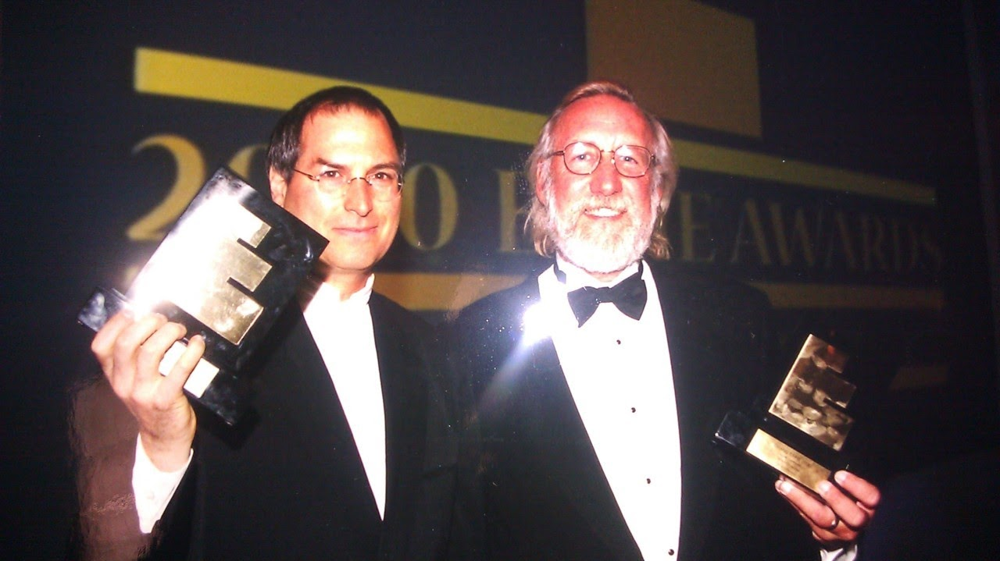
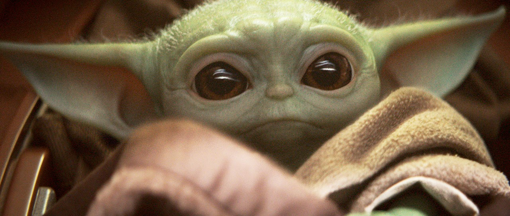
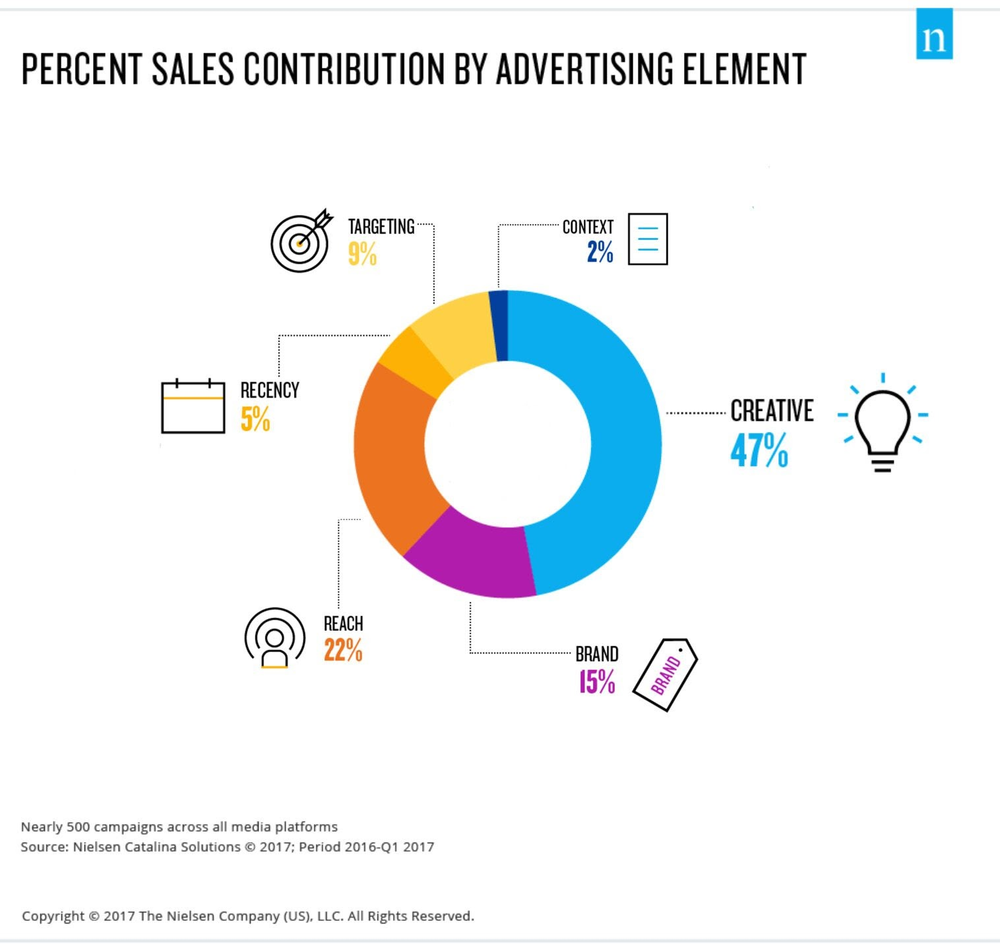
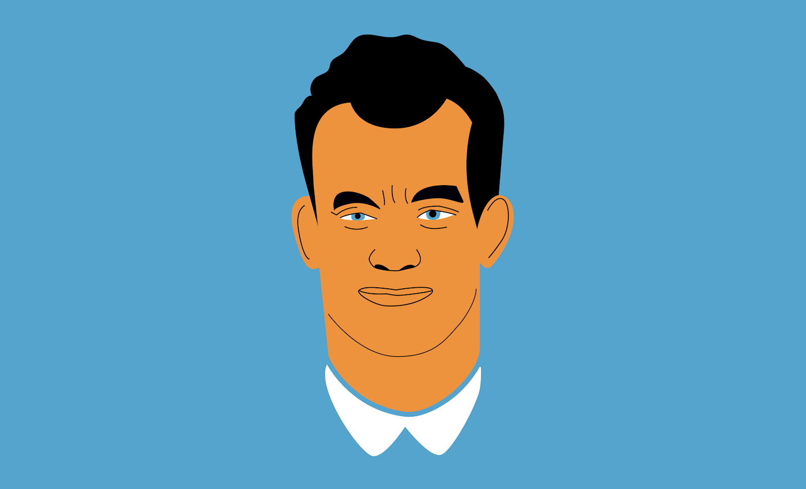
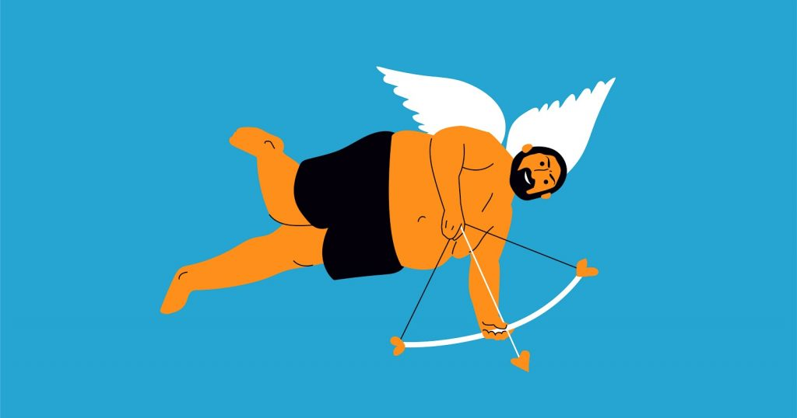
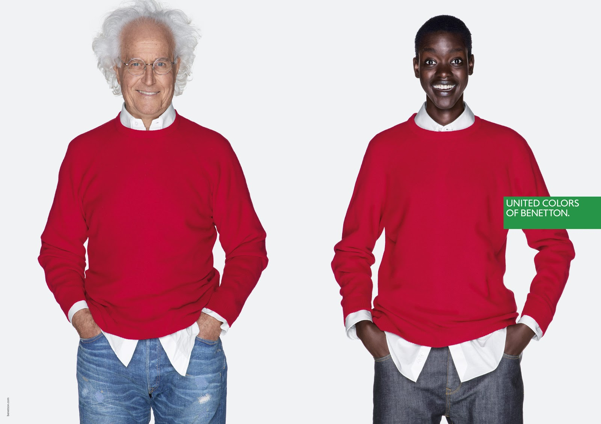
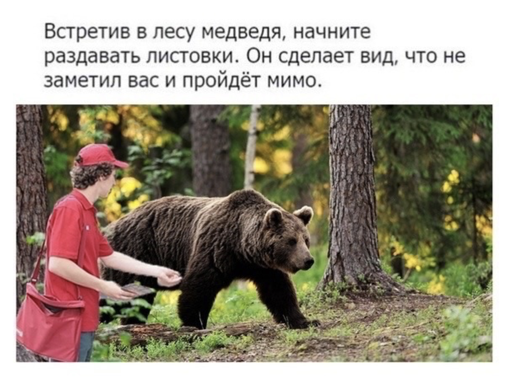
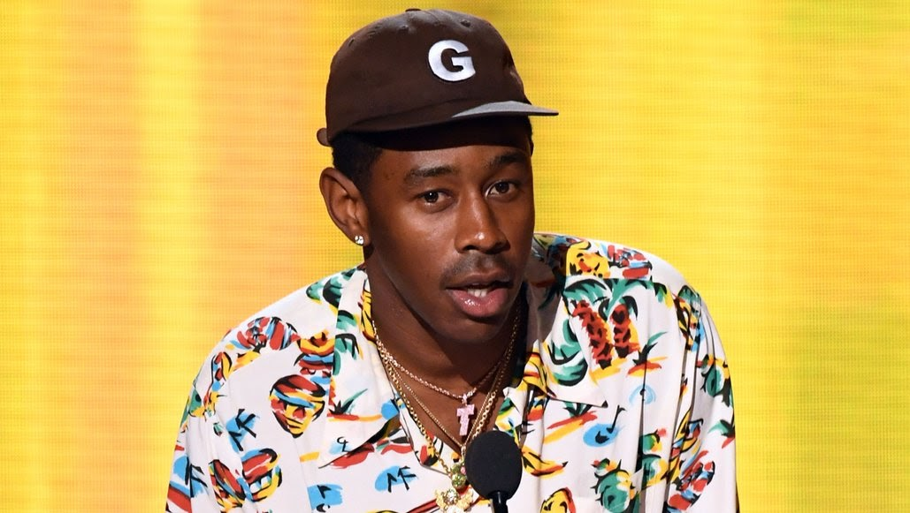
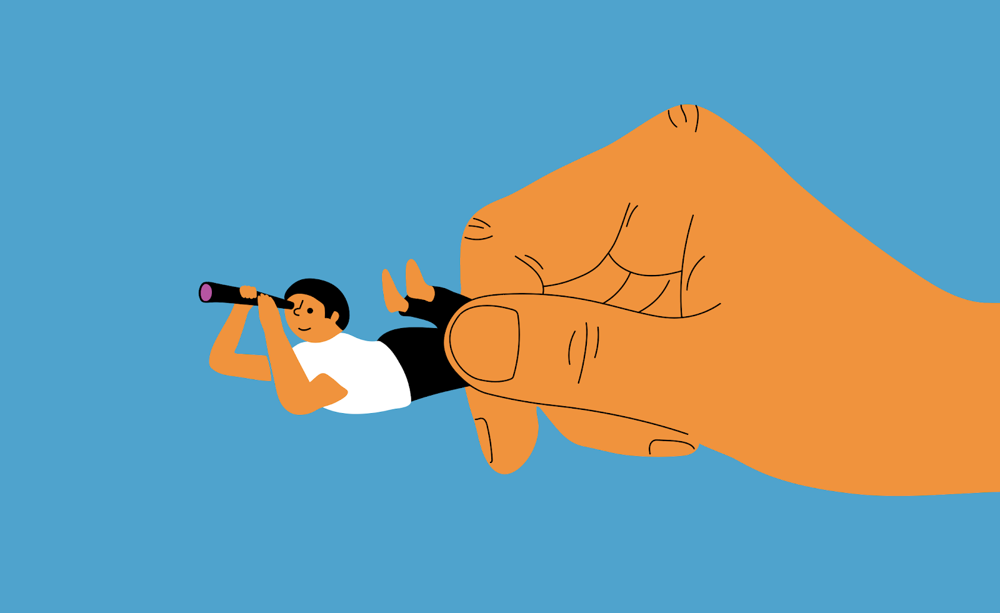

Part 01
What advertising is actually for
A product solves a need. A brand earns a place in a person’s mind—and the work begins with attention, trust, and a reason to care.
Effie Awards recognize the thing that matters most in marketing communications: effectiveness.

A jury of 200 senior executives from leading Ukrainian and international companies reviewed 360 successful advertising campaigns and, after weighing the results, chose the best.
Strategy and creativity unlock the real force of communications. They are one discipline, one process: the creative process.
Being sensible when you work with brands means practising carefully controlled madness. We call it riding the crazy.
Creativity brings a functional job together with emotional resonance. It helps a business meet its goal while making the brand stand out and stirring up the category.
Creativity is business fuel. That is how it works in marketing.
Audiences make advertising effective. They either like it or they do not. The decision is theirs; marketers can only guess which levers will work.
When people share your ad on social media or react to it, that is the first sign that it works. People are talking about you, which means they know the brand and find it interesting.
Textbooks call this word of mouth: the pinnacle of effectiveness and sales growth. It is one of the strongest forces behind whether we buy the thing we have noticed. Between 20% and 50% of purchase decisions come from word of mouth. It is simple: if your friend says they loved a particular shop, you are inclined to like it too. No ad required.
If people keep talking about your brand and their interest does not fade, your marketers are doing a brilliant job. Or perhaps that marketer is you. Either way, congratulations: customers are becoming fans, and you are becoming an iconic brand.
Without hundreds, then thousands, of advocates, a brand will never become truly strong. Advertising is not primarily there to sell a product on the spot. It is there to build relationships with enough people that they become your agents. Put your time, effort and money into that.
Your product is sold not by your advertising, but by people who have never worked for your company. The more advocates a brand has to carry its story and defend it, the more powerful it becomes.
To win your first advocate, you need attention first, then trust. Trust is the one thing competitors cannot copy.
For trust to develop between a brand and its audience, something Americans call connection and belonging has to happen. Then you are admitted to the club: you enter people’s world, and sales begin to grow quickly. The hard part is that no amount of money can buy attention. You can only earn it.
Hal Riney once said: “Every department in an advertising agency can help our clients make money, but only the creative department can take one dollar and turn it into twenty.”
I would add that, for this to happen, the creative department must have strong strategists. Creativity alone, however brilliant, is not enough. No matter how dazzling the script or how sparkling the humour, it is only the outer layer: it answers the question “how?” The real substance lies in “what?”—the question answered by creative strategy.
That is why I will devote most of this article to strategic planning and the strategist’s work. Besides, every copywriter, art director, and brand manager needs to be at least a little bit of a strategist to build a career.
If advertisers were constantly trying to guess what people might like, the whole business would collapse fast. Agencies would go bust every day. Throwing ideas blindly into the sky is expensive, thankless work. That is why advertisers are supposed to know exactly what to say, to whom, and how to say it so that it works. Or at least they think they do.
£18.3 billion is spent on advertising in the UK every year. Four percent is remembered positively, seven percent negatively, and 89 percent is neither noticed nor remembered at all.
Why does so much advertising go unnoticed? There is always one reason: brands and the agencies that represent them genuinely believe people are as interested in their product as they are. They are not.
People do not care. In principle, they do not like advertising of any kind. To them, it is an interruption: a stream of interchangeable messages shouting at them, urging them to do things that do not feel like them, to live lives that are not theirs.
The world of brands and the world of ordinary people are nowhere near the same. Brands are worth millions; the average Ukrainian earns 6,500 hryvnias a month.
Everyone loves films. Stories that unfold at the edge of possibility and desire. Because everyone wants to know what happens next. Even when a film is bad, we often watch it to the end just to find out how it turns out. Bad advertising, though, gets switched off within seconds.
Imagine you represent a Hollywood studio worth millions, and this screenplay lands in your hands: a young man falls in love with a young woman. They marry. They have children and a spaniel. The children grow up, graduate from university, and start families of their own. The climax: an ageing couple admire a peach tree in the small garden beside their home. The end.
What are the chances you would fund that film? What are the chances anyone would be interested in it?
Zero. You know perfectly well that screenplay will fail. Something extraordinary has to happen. The audience expects it.
Now imagine you are the marketing director of a company worth millions, and a commercial script lands on your desk: a young mother pours orange juice for her two children. They drink it, laugh, and hug their mother. The end.
What are the chances it will go on air? Unfortunately, quite high, because the script is completely safe. It is like a Styrofoam boat: it will never sink, but it will never pick up speed either.
Why is something that would never work in a film used so often in advertising?
One of marketers’ gravest mistakes is believing that people care about what you want to offer them.
Companies and the agencies that advertise them look at their own brand through one end of a telescope and see something large and beautiful. People look through the other end and see a barely visible little bug, one among thousands.
Now imagine that bug also tells them it has a great product, the latest technology, an innovative approach, time-honoured quality, and unique service. All of that may be true. None of it will make the bug stand out above the noise.
You know the opening credits where the announcer says, “Starring Richard Gere and others”? There may be many “others,” and they may be excellent actors, but the announcer cannot be bothered to read out every name. People are just as reluctant to memorise every brand on a supermarket shelf. There is Colgate, and then there are other toothpastes.
Every product category has its Richard Geres and its “others.” Advertising’s main task is not to sell the product. It is to move it out of the “others” column and as close as possible to Richard Gere. Then people will start buying it.
The most effective way to awaken desire in people is to help them imagine what their lives will look like once they accept your offer.
Advertising is only one factor in the urge to buy. Plenty of products sell well despite poor, mediocre advertising. There may be a shop right across the street. The product may be inexpensive, attractive, and decent quality.
It is incredibly difficult to damage a brand with advertising. A bland mention on air is unlikely to hurt it, but it will not help either. People will see the message and remember it reluctantly, briefly—perhaps for a few seconds. Those seconds are expensive, and they will only become more expensive over time.
Great advertising, though, can have a staggering effect. A brand can become a cultural event, a phenomenon, a reason people of an entire generation change their behaviour. It can rise to another level and become one of their own. And people do not abandon their own. They forgive their flaws and share their most personal things with them.
Good advertising should leave you feeling that a product was made by people, not corporations.
Here is an example. Almost everyone ignores the advertising stuffed into their mailbox. If a message is too direct and pushy, or feels too mass-produced, the recipient will throw it away 99 percent of the time without a second thought. Change the form of the message and its reception changes immediately. Most people will open an envelope with their name and address written by hand: it is obvious that someone took the time and trouble to send it.
Every brand dreams of having a place in people’s lives. The first step is to stop speaking like a brand and start speaking like a person. That turns out to be difficult. It is essential to talk not about yourself, but about people. Nobody cares about one more cool product. They may care about how cool they can become because of it.
Your friend would never advise you to solve problems that do not exist. So why do so many brands do exactly that in their advertising?
Good advertising and bad advertising begin the same way: people at agencies sit in rooms with flip charts and think about how to solve a problem. The difference is that some find the shortest, most unexpected route to a solution, while others struggle even to define the problem.
No brilliant campaign appears simply because somebody had to come up with something original. It is a carefully planned military operation. To arrive at a simple, effective message, you need a strategy. And a strategist who can frame the task for the creative team.
Strategists follow a framework. Every project should begin by clarifying the following:
- Who is the person you want to sell your product to?
- Who is your main competitor? What are they doing wrong?
- What is happening in your category? What opportunities does that create for you?
- Who are you? What emotional connection exists between your brand and the person in the first question?
Once all of this has been explored and discussed, once the strategist has a full view of the situation, they can set the task.
The task cannot be vague or banal. It must be precise and daring—the kind of problem a mind wants to wrestle with and beat. You might think there is nothing easier than stating one simple, clear objective: why are we launching this campaign? Yet this is where the difficulties begin.
Imagine we are launching a new brand of crunchy bread snacks called “Wisdom Bison” and have prepared a launch brief. Let us look at the worst and best versions of that brief.
Buried among several pages of information, figures, charts, and incomprehensible terms, the bad version would say:
- Create an advertising campaign to launch a new brand of crunchy bread snacks.
- Recommend promotional channels.
- Target audience: people aged 16–24, roughly middle-income, innovators.
- The campaign must reflect the latest social trends.
- Propose an idea for a viral online video.
When a creative receives a brief like this, the first impulse is to close it and forget it as quickly as possible. It looks like an inevitable headache. In this case, they will have to guess what the client wants more than once. So the creative opens Google and searches for every bread-snack commercial ever made, intending to do the same thing differently—as though the brief never existed.
Meet Serhii. Tomorrow he turns eighteen. He lives with his parents on Kyiv’s Left Bank and plans to apply to the Kyiv Polytechnic Institute this year. He does not have a girlfriend yet, but he has two best friends. Serhii spends all his free time playing computer games and making music—on the same computer. He is sure he will become famous and rich.
Serhii thinks he is already grown-up enough to joke with his friends about the adults they know, including their parents. The most important thing in life is not to be like everyone else, while still being like his friends. By “everyone else,” he mostly means adults who have fallen behind the times—which is to say, everyone.
At home, his parents and grandmother are beginning to get on his nerves. They do not understand what he does or why he does not read books and do homework like all normal children. Serhii has no money of his own. His weekly ₴200 allowance is spent like this: 50 percent on alcohol, 30 percent on transport, 10 percent on the cinema, and 10 percent on food. By food, he means packaged snacks, sausage rolls, and fried pastries.
The task is to make Serhii notice Wisdom Bison snacks, try them, and recommend them to his friends.
Perhaps, if there were such a thing as a Doctor of Advertising Science, they would tear this article to shreds. But since that degree does not exist yet, here it is—along with my thoughts on how brands rank in their own imaginary championship: from weaklings to champions. What defines their behavior? Why do some rise while others do everything right and still cannot move up?
Everything below comes from my imagination and years of watching brands behave across categories and markets. I wrote it with one aim: to make your brand stronger and its advertising bolder.
As Thomas Macaulay supposedly said—though, honestly, I have no idea who he was—
Only a mint can make money without advertising.
No one can do without advertising, yet it does not work equally well for everyone. Some do it brilliantly; most, not so much. Why? Let’s find out what nine out of ten brands get wrong—or leave unfinished.
First, we need to understand where a trademark ends and a brand begins. Why can you sell well for years and still have no brand? Because millions of people need millions of things. If you offer those things, people will buy them one way or another: badly, well, grudgingly—depending on your luck. But if you want to play in the top league, start thinking about brand. A study of 260 of Sweden’s largest companies found that brand-oriented businesses generated, on average, 100% more profit than those that treated brand-building without much enthusiasm.
We live in an age of excess supply—at last. A world in which most goods, products, and services have already become invisible. Everything has dozens of alternatives. That is why we are now in a war of brands. Winning it is not easy: there will always be someone people happen to like more.
You can love a product, but it is hard to love a trademark. There are countless trademarks, and they resemble one another like leaves on a tree. I recently came across a product that had survived successfully for more than ten years, yet people could not describe how they felt about it. Beyond “traditional” and “high-quality,” they had nothing. Why is that thin ice? Because the moment someone makes something similar but 3% better, many will switch and never come back. It makes sense: you feel nothing for “traditional” and “high-quality,” so replacing one with another takes no emotional effort at all.
It is hard to love a manufacturer. It sits somewhere far away in its innovative factory and probably has little in common with me. You can remember it, yes—but love it? That is as difficult as feeling grateful to a supermarket shelf or emotionally attached to a shopping cart. People love brands.
A product satisfies a need. A brand gives it emotion and an aura—one that can make someone feel, say, like Bruce Willis.
There are tens of millions of trademarks fighting for our attention and money every day. Yet only five in a million become icons and find a permanent corner in people’s hearts. No wonder they are valued in the billions. What should everyone else do?
Advertise. No better alternative has been invented. Advertising is how you speak to people about your brilliant product, and how you make the leap from trademark to brand. But for advertising to be extraordinary, it must be risky from the start—the kind that makes you wake up drenched in sweat, wondering whether you went too far.
Preserve the status quo and you will not take off, no matter how much money you spend on media. Risk is creativity’s synonym. You cannot become a strong brand without making something new. The most you can achieve without risk is to strengthen your position on your current floor—perhaps while making money. But you will not reach the next level, the top league where the stakes are thousands of times higher.
We live in the startup era, and creators of new tech products often dismiss advertising and marketing as artificial and illogical. They are fanatically focused on the product and forget that businesses usually fail not because the product is poor, but because distribution is weak.
Peter Thiel, PayPal co-founder and an early investor in Facebook, LinkedIn, and many other wildly successful startups, once said:
If you invent something new but fail to devise an effective way to sell it, your business is no good—regardless of the quality of your invention.
The most effective way to sell something is to make people feel that you are one of them: a person who genuinely loves what they do. You cannot get there without a brand and good advertising.
Like anything else, a brand can have different degrees of strength and influence—different capacities to enrich people with its aura. Every brand clearly follows a path, from its weakest to its strongest form. And where there is a path, there must be milestones.
The same is true of people. As we grow up, we change. I once came across an article describing four stages of personal development: the Athlete, the Warrior, the Achiever, and the Spiritual Being.
Part 02
Win the first battle: attention
People filter commercial messages by default. Reach, targeting and spend are useless until the work gives them a reason to stop.
Round one: my attention
I live in my smartphone. It helps me escape the strain of ordinary grey days. I am lazy, I lose interest quickly, and I switch away fast. Most of the time I spend there, perhaps 90%, I am wandering around the internet with no particular purpose, looking for something entertaining. I have learned to stop seeing ads automatically.
My finger has developed a skip reflex. If you want me to stop on your ad, catch my eye in the first second. If it is a video, the first frame has to make me pause. If my thumb is not asking, “What happens next?”, it will spare no one: not women, not children, not Dalmatians.
Thumb-stopping content
Eight in ten people watch YouTube videos before making a purchase, and 70% of viewing time happens on smartphones. You need to learn to think like a smartphone.
Half of all YouTube videos get fewer than 500 views. Only 0.3% reach a million or more. Three hundred hours of new content are uploaded to YouTube every minute, and the number keeps growing. Winning attention is hard now. That makes it more interesting. You have to belong on YouTube, not visit it as a guest, and feel at home in the mobile world.
Your ad needs to give me a reason to notice it. Wanting me to buy your product, then showing it beautifully from every angle, is not a reason.

The reason can be something that breaks the usual order of things. It need not be nonconformist or shocking. A photo of Baby Yoda on Twitter, for example, gave people a reason to watch the first season of The Mandalorian.
Trapped by digital marketing
Digital marketing arrived. We learned to target messages with millimetre precision and follow an audience around the internet. Yet I increasingly tap “Hide ad” on Instagram because “I see it too often.” It is irritating. Advertising has become more intrusive and learned to catch up with us in the most unexpected places, but it has not become better. It has become ubiquitous.
Marketers have developed the false feeling that they possess secret knowledge that lets them whisper directly into people’s ears.
You can know everything about your audience, down to the smallest details of how they behave during the day. If your ad is banal, though, showing it again and again will not make it work.
You can be gods of data, but as David Abbott said: “Shit that arrives at the speed of light is still shit.”
Clients, and even agencies, often seem more interested in media placement than in the content itself. The complex interplay of programmatic data, digital technology, CX, UX and the rest produces large, beautiful presentations. It all looks like an impressive action plan. But advertising’s priorities have not changed and never will: ideas and the human factor come first. Technology is only a means. If the plan contains no creativity at all, it is doomed.
Creativity is still king
After studying 500 cases, Nielsen presented a broad analysis of what affects advertising effectiveness: creativity, reach, targeting, relevance, context, and the extent to which your brand is actually a brand.

The central finding: creativity is the undisputed leading driver of sales, accounting for 47%. It is what people respond to most, talk about, and give their attention and trust to.
For large cross-media campaigns, television still provides most of the reach.
Television content outperforms digital content on quality. On television, creative quality tends to sit around average; online, the range is wider, from far better to far worse.
There is much more of the latter. The internet is flooded with advertising trash built around placement rather than creativity. That road leads nowhere. It pushes us away from people when advertising should bring us closer to them.
Yes, understanding purchase cycles and placing ads closer to the moment of purchase can lift sales significantly. But only if the creative is good. Otherwise people will brush the ad away and become irritated. Why buy from someone who irritates you?
Part 03
Turn visibility into trust
A pause is not a relationship. Brands become human—and become stronger—when people can recognise a point of view, a personality and an emotional promise.
Round two: my trust
Why should I trust some trademark? Buy it and forget it? That is not very interesting. Our imagination looks for something to fall in love with.
People choose brands for the long term only when they feel something real. They never choose with reason alone.
I will never fall in love with body lotion, aftershave or antiperspirant. But I can fall in love with the brand that sells them, because it has entered my emotional world.
We think we are rational beings. We are convinced that we make logical decisions based on facts. We do not. That is not how we behave.
In many important parts of life, reason plays a microscopic role. Unconscious desires drive us instead. We are drawn to beauty, extravagance and the absurd. If you want people to trust you, you have to get past reason. The best ideas make you feel more than they make you think.

Trust is born with empathy. Tom Hanks feels like a genuinely good person, someone we could trust like a childhood friend, because we have shared the emotions of his best roles.
Empathy is an intuitive or conscious sharing of another person’s present emotional state. That is why it helps when there is someone alive behind a brand: an owner, an actor, or even a meerkat.
Who is the face of your brand? You may be a company with thousands of employees around the world and a large board of directors. “So what?” people will say. Show your face. This brings us back to advertising effectiveness, and to an answer that can seem to solve every problem on the way there.
A brand is a symbol of trust
Today, each of us is a marketer. We each have a brand and an audience: our social media account. Corporate brands work the same way. Some are interesting to follow; others leave us completely indifferent.
How public you choose to be is a personal matter. Corporate brands do not get that choice. You may be perfectly comfortable with 60 followers, a number that has not grown for three years. For a company brand, that is death.
Why do people find it uninteresting? Why do they not share its posts? Why do they not comment or react?
The first reason is that they do not notice it. It has not earned their attention or given them any reason to care. It is the same as everything else. In fact, it is not yet a brand, because people have not made it one.
A company can exist without a brand. But it is like living in a house made of plywood. How can you quickly tell whether you have something that deserves to be called a brand?
The Athlete
This stage belongs to young people hungry for recognition from those around them. Their looks, clothes, and manners matter most. Almost all their attention, money, and energy goes into becoming physically attractive. The Athlete is best captured by a teenager passing a mirror and throwing themselves a quick glance.
Some people remain Athletes for almost their entire lives.
The Warrior
As we grow older, we enter the Warrior stage. Every action is aimed at climbing the career ladder, buying a more expensive car, earning a bigger salary, gaining more prestigious connections. Possession is what the Warrior lives for. Having discovered their power, they put it to work for their own interests.
The Achiever
A reassessment begins. You start asking: “What have I done for others?” Personal success recedes into the background. You begin to wake up spiritually and wonder: “What will I leave behind?” It is a huge step forward from the Warrior phase.
The Spiritual Being
The final stage is the stage of spirit. We understand that we are more than what we have managed to earn. We are spiritual beings. This phase is marked by a sense of moving beyond one’s own mind and focusing on what awaits outside the physical body. There is no longer any need to prove something to someone, to race ahead of others. Spiritual beings savor every moment; they see and value harmony in everything. They stand above the things that preoccupy ordinary people.
If brands grow through stages of development too, it is worth asking what those stages look like in their world. To understand the turning point at which a trademark becomes a brand—and what it takes to make that happen—let’s imagine that every trademark and brand lives in one five-story building. Let’s call it Philip’s House. The stronger the brand, the higher it has climbed. Moving between floors gets harder and harder, which is why there are so many brands at the bottom and so few at the top.
Let’s visit every floor and see what its residents live for. Which floor is your brand on today? What is keeping it there?
First Floor: Single-Cell Trademarks
The next time you see a sci-fi city of millions of identical capsule-pods incubating strange organisms, imagine the first floor of our building. The moment you register a trademark, you arrive here: a raging ocean of sameness, full of “quality guaranteed” messages and millions of single-cell trademarks.
Every apartment has the same decor, every door the same gray mat. It is a huge ecosystem where everyone copies everyone else. These trademarks want one thing only: to sell as much as possible. They think about price, not values. They are born, die, and vanish without a trace every day—and no one cares.
People may use the products or services of the same trademarks, but they do it automatically, out of habit. Their relationship with a single-cell trademark is purely utilitarian: buy it, consume it, forget it. Like a flyer someone presses into your hand outside a subway entrance—you take it out of respect for the person handing it to you, and twenty seconds later it is in the bin.
Single-cell trademarks may advertise, but it is more like chaotically handing out business cards than deliberate communication: “Hear me. Call me. Buy me.” Picture a faded notice on a street-corner pole: “Metal shavings. Tel. 232 33 22,” or “Confectionery direct from the maker.” No matter the channel, that is how their advertising feels.
A trademark needs to start radiating emotion. That requires the first brand markers: signals that say how it differs from the rest.
An interesting name, a logo, distinctive packaging, and other design flourishes—everything we are tempted to call a brand—are not a brand yet. A name, logo, illustration, even video spots are tangible markers. Until you and your product have a story that ties everything together, those markers are empty. They lack meaning; they have not been filled with people’s experience and imagination.
Packaging can be original three times over, but if there is nothing behind it, the brand does not exist yet. Only the packaging does.
Second Floor: Freeloader Brands
This is home to trademarks that think they are already brands, though they are not. Each has a brand starter pack: a set of brand markers. It has all been articulated and documented somewhere, but people do not care. They are simply not interested—because the stories of freeloader brands were made not for people, but for themselves.
Freeloader brands have already tasted advertising’s effectiveness and now use it to the full. They are hooked on it, with little enthusiasm for their communications. Take a shot: sales rise. Skip a shot: sales fall. Simple.
Second-floor residents do not believe in emotions, missions, or values; to them, it is all tinsel and fairy tales for marketers. They believe in volume and dream that one day their advertising will blanket the entire planet—literally wrap it up like an orange in a napkin.
Every idea revolves around price and product attributes: it is convenient, tasty, good value, and so on. Tellingly, even when they generate huge turnover, freeloader brands tend to have relatively low profitability.
People on this floor want to be everything to everyone and end up being nothing to anyone. They solve customers’ problems head-on. Notice: customers, not people.
What do customers need? Their consumer needs met. And freeloader brands think they do that perfectly, chanting the same words in unison.
As I said earlier, you can be a fairly successful company, make a good product, and have loyal buyers—yet still have no brand. I once saw a telling moment: a host asked the senior team of a high-revenue company to describe its brand, and they froze. After what felt like an eternity, they began throwing out wild clichés shared by the entire category. Because the brand did not exist. There was only a trademark name—or a heavily advertised freeloader brand.
I once turned on the television while on holiday and landed in an ad break. One after another came spots from various freeloader pharmaceutical brands. They merged into a cacophony of sneezing children, mothers, grandmothers, and grandfathers clutching their backs. The voice-over asked: “Troubled by a cough? Sore throat? Headache? Nerves? Bloating?” Then answered: “There’s a solution!” Ten commercials built on exactly the same formula.
It was like walking into a pharmacy and looking at posters of smiling people; only the drug names changed. You could shuffle the logos at the end of the commercials and nobody would notice.
Again: if you want to climb to the next floor, forget customers and ask what people need. A great illustration of the difference between a person and a consumer came from Omo laundry detergent. Every mother wants her child’s clothes free of stains. It seems obvious that dirt is bad and clothes should be perfectly clean. But no: when a child comes home in the evening covered in mud and delighted, it means they are living a vivid, energetic life. Every mother knows this. So dirt is good.
Instead of repeating what every other detergent said about destroying stains and dirt—meeting consumer needs—Omo considered what a mother, not a consumer, wants and launched the brilliant Dirt is Good campaign. Does that mean Omo removes stains worse than anyone else because it did not mention stain removal in the ad? Of course not. It said far more. Omo is the best detergent because it understands that healthy children are often dirty children, and that this is happiness. With that approach, no stain is frightening.
There was a time when appearing on television meant you could be trusted. Brands took advantage of it. Once they got “onto TV,” all they needed to say was something obvious—“the right choice,” “proven quality”—and the mechanism clicked into place.
That no longer works, because now people see you on the internet. As I once heard in a focus group: “It’s one big dump.” There is no point telling people about quality. Technology is made everywhere, products are built to high standards, every service claims to be customer-centric, and so on. We stopped buying products a long time ago. We started buying brands—which now live online, on their own.
Freeloader brands keep falling into the same trap—“me, me, and me again”—but they have another defining flaw: a total absence of personality.
People are always trying to assess the personalities of those around them. We also project human traits onto inanimate things and treat them as if they were alive. That is the foundation of brand personality. We use human criteria when we speak and think about brands.
Just as ordinary, unremarkable people do not interest us, we do not pay attention to brands without personality. We would hardly invite someone to a party at our home if they had no sense of humor and nothing to discuss beyond work. We would be equally unlikely to buy their jeans if they created a brand called Quality Denim.
Every brand needs a “nose” that people can grab onto. That nose is what makes you distinctive. Until you have one, you literally do not know how to behave in communications, so you behave however you please. The result is that you blend into the background.
Carl Rogers called personality a “fully functioning person.” The same applies to brands. Once a brand acquires a personality, it begins to act.
A freeloader brand needs to acquire a personality. If you are the owner, gather your senior team, invite a good advertising agency, and lock yourselves away for two days for a strategy session—or call it a brand session, if you prefer. If you own a three-person company and cannot afford an agency, lock yourselves away anyway and do it. It will not make things worse; it can only make them better.
The phrase may sound dull and formulaic, but in reality it is an engaging, inspiring exercise. You will see yourselves from the outside, think about unexpected things, and see your brand as a living person with a character, habits, taste, a walk, and a worldview. You will learn a great deal about yourselves and clearly understand the task:
What you need to say, to whom, and how, in order to grow in the market.
The first thing to define is your key customer: the person for whom you are doing all this and from whom you plan to make money. Use the full power of your imagination. Do not be afraid of precise definitions. The more specifically you describe your person, the easier it will be to understand how to enter their world with your product. Avoid vagueness and generalities.
Different agencies use different tools for describing a key customer. Broadly, you begin with a dossier, as if you were FBI agents gathering intelligence on a suspect, then move to more evocative territory: character, taste, interests. What stops this person from enjoying life? What keeps them awake at night? What do they dream about? Where do they see themselves in five years? Whom do they envy? What do they hate? What leaves them indifferent? Where do they spend Friday evening? You can describe your person by moving through questions like these.
Once you have described your person, you need to feel your way toward your brand and find its personality—with the same detail and imagination. Start with the nuances of your brand’s style.
Perhaps your brand looks like a Greek vase, a skyscraper, worn jeans, handwritten lettering, or a child’s drawing. Perhaps it sounds like Frank Sinatra, Kanye West, raindrops on glass, a Formula 1 car, a doorbell, a whisper, a mountain echo, thunder, a purr. It has a favorite joke, catchphrase, line from a song, argument in a debate, turn of phrase, or short story. To the touch, it is cool granite on a summer day, bubble wrap, a soft rug, a bowling ball, a wood-trimmed steering wheel, a doughnut. Its taste and smell are cinnamon, lemon, honey, chocolate, or a hamburger; acacia in spring, a campfire, sea breeze, your mother’s pastries, an old book.
All of this helps you feel the brand—find its quirks, flaws, and little wrinkles. Then bring it to life: imagine it as a living person.
My favorite activity in strategy sessions is personifying clients’ brands: imagining each as a living person, down to the nuances of their character and the color of their socks. The more alive a brand is, the better. A brand should live—and enjoy living. I realize I see my favorite brands not as something abstract, but as specific people. Mercedes, for example, is a tall man named Helmut. He is 47 but looks 40: graying temples, a fitted navy suit, a white shirt, a woody scent. If I asked him for a joke, it would go something like this:
After a momentary smile, he would become serious again. Helmut is a supreme pedant. I cannot imagine a dripping tap in his home or a kitchen drawer that sticks. Impossible. I am sure his shirts hang in the closet according to a strict mathematical formula, yet everything looks elegant. Helmut enjoys his position in society and a life that moves at a noble, measured pace. He likes sitting by the fireplace with a glass of his favorite whisky, thinking. He speaks slowly and beautifully. In short, he makes an impression.
BMW, by contrast, is a young man named Uwe, 29 years old: jeans, sneakers, a leather jacket over a graphic T-shirt. Uwe lives in the moment, enjoys life’s pace, loves Guy Ritchie films, and travels a lot. A large poster of young Bruce Lee hangs in his bedroom. Uwe is an entrepreneur, happy to take risks. He loves a big crowd.
That is how I can describe every strong brand: each has its own character. You might say these brands have hundreds of millions to spend on communications, which is why they have formed such clear images. Yes—but what stops a small bakery kiosk by the subway from putting up a $100 sign that says, instead of “Always fresh pastries”:
I’m Roma, a little kiosk. More than anything, I love fragrant buns and the smell of dough. And I hate boredom. Hi!
To become a strong brand, you must start thinking and acting like one, even if you are still a Lilliputian. When you give birth to a brand, you will already know who it is for. What emotional connection should emerge between your person and your brand?
For illustration, let’s look at a few kinds of emotional connection between brands and people.
“You help me achieve my goals.”
The Economist
“You are always there, egging me on.”
Amazon
“I savor every minute with you, even if it will not last long.”
Martini
“You’re always there, egging me on.” (Amazon)
“I enjoy every minute with you, even if it doesn’t last long.” (Martini)
“I can’t do without you: you give me what no one else can.” (Apple)
“You make me look better in other people’s eyes, and I use you for it.” (Louis Vuitton)
“I’d never admit it to anyone, but you make me happier.” (McDonald’s)
Brand Essence
Once you have worked out your brand’s personality, move on to its essence. It is already there; all that remains is to capture it.
- Who are you to your person?
- What are you inviting them to do?
I believe in very simple, clear definitions of brand essence—the kind that even children could understand. Let’s run a test. Imagine we are developing a new international brand for a job-search website. The emotional reality of considering a new job is easy to recognize.
There is tension in the entire process of looking for work and changing jobs. Essentially, every other person is open to an offer because they are not especially happy where they are—but they are afraid to take the step. They worry, make excuses, put it off, and keep going to that tired old office. It can last for years, even a lifetime.
Perfect. Our brand now has a strong role and a clear essence. Instead of talking about the convenience of the service and its other features—the favorite pastime of freeloader brands—let’s say our brand is that optimistic friend who believes in you until the very end. Everyone has one.
“Come on, you can do it. Quit that damn job. Send the résumé. You’ve got this.”
Our brand is an inspiring shot of confidence. It is the kick that makes you wake up and act. With an essence like that, it becomes clear why you exist, what you promise, who your enemy is—and what to say, to whom, and how, in order to make it work.
A brand appears. Its personality, essence, mission, promise, and so on have been documented. Perhaps several strategy sessions have already taken place. But how do you make people discover everything born in agencies and marketing departments? You need communication—and this is where the problems begin.
Having taken a confident first step, model-student brands become strangely cautious about the second. Their advertising often resembles a love story worn thin by repetition: male friendship, trust, care, partnership. The result is that they all share one personality. People know the model-student brand exists, but they do not want to “talk” to it. It will just tell them some more correct things, and everyone will start yawning.
“The foundational strategy of our bank is to be a bank.”
Model-student brands try desperately to do everything in a way that earns the teacher’s praise and makes them an example to the entire class. They are highly systematic, consistent—and therefore boring. “Experiment” is a swear word in their vocabulary.
Take my favorite category: banking. The concentration of model-student brands there is off the charts. What do banks love doing in their advertising? Telling us that they are banks.
“Yes, but we can already see you’re not a vape shop,” people say.
The banks do not care. They keep following the manual. Instead of building a brand in the world of people, they build a bank again and again.
Model-student brands take themselves and what they do far too seriously. They are catastrophically short on lightness and self-irony. Afraid of saying the wrong thing, they become too fixated on their image. The “model students” strive for flawlessness. And that is exactly what prevents them from getting close to people.
Imagine an influential politician comes to us, preparing to run for high office. They are a visible figure, with a team, a program, and everything else. But how do they tell people they are a good person? That is who people actually want to vote for. How do they become accepted into people’s world?
At the very least, they must avoid the trap of reciting “A strong country,” “Leadership qualities,” “Decisive change,” “Prosperity,” “The future”—all the language that says you are just another politician from the world of politicians. Instead of trying to construct the image of a perfect politician, show everyone that you are an ordinary person too. That is the secret.
You have probably heard about Canadian Prime Minister Justin Trudeau’s socks. If not, look them up.
Genius. Name any other Canadian politician from the country’s entire history. This is what creativity is—and it takes courage. If Justin wore dark-green socks, then brown ones, then burgundy ones, then cream ones, he might still have been a good politician, but just another politician. Now he is a person.
Every model-student brand is choosing between burgundy and brown socks. No one even risks looking in the direction of socks with little ducks on them.
Creativity is the courage to take the first step.
Films make us want to know what happens next. In detective stories: who is the killer? In sports: who will win? In Pokémon, back when it was popular: which character am I still missing? Advertising should intrigue us too. And model-student brands are spectacularly bad at it.
They agree with every word of this. They sign off on every word. But they do not do it themselves. Why?
Because creating something new is always frightening.
It has not existed before. No one has reacted to it yet. You will be first. You cannot know for certain how it will turn out. To create something new, you have to be a hero—and heroes live one floor higher.
Model-student brands also have a hard time because eight little devils work tirelessly to stop them. These devils never sleep. They are always nearby, whispering things into your ear that sound rather sensible when you think about them.
- Bob. The first little devil, Bob, tells the model-student brand to think three times before doing this. “If you’re so sure, why has nobody done it before you? What will smart people say?”
- Jim. The second devil, Jim, says: “Maybe it’s a good idea, but now isn’t the time. We already have enough on our plate. There are more important things to do.” Jim leaves out one detail: the right moment will never come. You cannot predict the perfect time for a new step. You either take it or you do not.
- Donald. Fine, do it—but there is always a risk it will fail and people will laugh at you. Donald will laugh louder than anyone. The fear of making a fool of yourself is a serious barrier for anyone trying to create something. When I was writing this article, Donald sat on my left shoulder the entire time.
- Billy. The fourth little devil, Billy, says that when a model-student brand creates something new, it does not know exactly how to do it. But that is the point: to find out, you have to dare to experiment and see what works and what does not. Columbus was certain he was sailing to India.
- Johnny. Johnny is a very experienced, meticulous little devil. He can always produce a thousand objective reasons why this or that cannot be done.
- Jack. “Oh look, another person reinventing the wheel,” Jack says, rolling his eyes. This devil persuasively whispers that there will be no going back. Why break what already works?
- Chuck. “Before taking such a serious step, let’s research what research we need.” Chuck will test things to death, even when there is barely anything to test. He will find something anyway. Because while you are testing, no one can call you crazy—as they did Steve Jobs when he decided a phone could have no buttons.
Chuck is an extremely popular little devil. Inventors know him especially well. And the inventors he has failed to scare are known by the whole world. As Jeff Bezos put it: “If you know it’s going to work, then you’re not creating anything truly new.”
- Benny. Benny warns you: never in human history has anything new appeared without meeting resistance. People will look at you sideways, call you names, and if what you have planned actually succeeds, they may even hate you for it.
Creating something new is difficult. To do it, you need to become a little bit of a poor student. One of my favorite cases from last year is an excellent illustration of what I mean. To create something genuinely new in electronics retail, Comfy became a “poor student.”
The campaign results were so strong they had to be hidden in the case study, lest competitors explode with admiration. Still, look at how many people were possessed by Benny the first time they encountered this version of Comfy.
Without “the new,” a model-student brand cannot move up. It can only keep walking in circles. Its symbols, its jargon, its little signatures—all the things that make a brand a real brand—cannot come from textbooks. They have to be created.
To understand the difference between model-student brands and the residents of the next floor—hero brands—let’s listen in on a conversation between them.
Why is Reebok a model-student brand? Because year after year, it tries to keep up with trends. It wants to leave a mark, but so far it leaves only an aftertaste of imitation. It seems to do everything right, by the book, but it is still far from being a hero—and light-years away from being an icon. Because when you are chasing something, you will always be slightly behind it. That is precisely the impression Reebok gives me.
Why is Nike a hero brand that became an icon? Because it does not try to conform to anyone or anything. It does what it believes in. It found its own little niche.
The French have an interesting expression, cherchez le créneau; in English, it is find the gap. I would rather translate it as: find your own little nook.
Today, strategy is king. It is no longer enough simply to invent something good—perhaps even the best thing. The winning brand is the one that finds its own nook in the world of people, even if its product is entirely ordinary. The popular nooks have long been occupied. But some have gone unnoticed because people thought they were too simple. Perhaps their time has finally come.
For that, you need to keep your ear to the ground. Imagine you are launching a new beer brand called Sean Foamy. Look at the beer category: which nooks are already taken? Everything around taste, tradition, proprietary recipes, ingredients, male friendship, football.
Now look for an empty nook. Here is one: people drink beer to hit pause on everything they cannot be bothered to think about today—especially in the evening. “Have a break, have a KitKat,” only in beer.
“Sean Foamy. Tomorrow is a new day.”
Part 04
Give the brand a position
The category already owns most generic claims. Your job is to establish a role people can recognise, remember and choose.
Test: Your brand minus the commodity
Take your brand and the category it belongs to. For example: Bulbashko™ and sweet carbonated drinks.
Now describe your brand using any words that come to mind. Remember, though: people do not see the same thing in your brand that you do. Try to do it from their perspective.
Imagine you are a fairly successful company selling products under the Bulbashko™ name. You have advertised for years. How do you think people see you?
- Fun
- Family
- Celebration
- Tasty
- Quality
- Friends
- Bright
- Positive
Now describe the commodity in the same way: the generic stand-in for the whole category. In this category, there is a player so strong that it has become the category itself: Coca-Cola. Coca-Cola has the most recognisable logo in the world. Ninety-four percent of people on Earth can identify the brand by its colours. So we can describe it like this:
- Fun
- Family
- Celebration
- Delicious
- Quality
- Friends
- Bright
- Positive
Plus:
- Santa Claus
- Polar bears
You end up with the same thing. Coca-Cola even has two more associations.
What does that mean? Your brand does not exist yet. You are investing in advertising for the commodity and promoting Coca-Cola, which already spends $3.3 billion on marketing every year without your help. Do not invest in advertising the commodity. Build your own brand.
- Fun
- Family
- Celebration
- Delicious
- Quality
- Friends
- Bright
- Positive
- The one that supports same-sex marriage
Brands change how people see a commodity. Twitter changed how we think about news channels. Uber changed taxis. Airbnb changed hotels. Nike changed sporting goods.
The pioneer brand
To make your advertising more effective, make your brand a pioneer. Be the first to say what everyone is already talking about.
Only advertising that disrupts the usual order gets remembered. Marvel Studios is making a blockbuster featuring a transgender superhero.
Marvel chief Kevin Feige put it this way: “We want our films to reflect our audience, so that every viewer around the world can recognise themselves on screen.”
That is a good ambition if you want to build a strong brand. Be the first to tell the truth, and help it break through. Bad, ineffective advertising always pretties up the truth until it becomes primitive.
When we buy products, we also buy a small bundle of feelings and emotions. They come from what we imagine for ourselves. Emotional qualities always outweigh product qualities.
Healthcare does not sell medicine; it sells trust. A lottery sells hope: “That could be me.” Tiffany sells the meaning someone has in your life. Facebook sells belonging, while Whole Foods sells care and love for yourself and nature. LEGO sells its mission to inspire and develop “the builders of tomorrow.” Innocent juices sell me my wish to do something good for myself today.
That is why brands exist: to help people finish imagining why they need your product.
Brand salience vs. brand image
If you have to choose between brand image and brand salience, choose salience every time.
Salience is the number-one job of every brand.
Look at the market through a buyer’s eyes. Every bank wants the image of a company you can trust. Every food brand wants the image of impeccable quality. People are bored to death by it. They want a brand they can fall for, one that makes life more interesting.
Then monobank arrived in the mothballed banking category with its cat mascot. Everyone noticed, and trust followed soon after. Mono is now the fastest-growing neobank in the world, adding 4,500 customers a day.
So here is an appeal to every brand manager: do not panic too much about brand image. Do not spend your life chasing semantic perfection and total control over every touchpoint. Be present instead. Your job is to become part of people’s lives.
One meme from your bank can work better than three entire campaigns about convenience and security. It does not look like commercial content. Memes speak people’s language.
Stay the most visible, even when you make mistakes.
Every brand now needs its own emotional codes. Build your brand on emotion. The fact that the world knows your ultra-technological product exists does not make it a bestseller. Buyers may walk straight past it. Google Glass failed because people looked ridiculous wearing it, and its advertising never solved that problem. It sparked no emotion.
If your brand book, brand policy, or any other rules stop you from being the most visible in your category, those rules are working against you. They reduce your brand’s impact and the effectiveness of its advertising. Sooner or later, the brand will deflate.
Interest in you needs to be alive, not kept going by artificial respiration.
So get close to the line and cross it. Walk on thin ice. Take risks. That is what people expect from you. In modern brand management, voicing a position, even a stupid one, can matter more than the position itself. People have had their fill of brands, missions, and promises. They do not care what you say in your advertising anymore. They care how unusually you say it.
Positioning: Be a Category of One
Top-of-the-class brands, almost without exception, try to squeeze into niches that are already occupied. That is why it is so hard for them to become distinctive—and for their sales to become exceptional. If you occupy a niche where you are not the only one, you have a positioning problem.
What is your position? Do people understand it? What is new about it?
Brand positioning lives in people’s imaginations. You will not find “the uncola” inside a can of 7UP. No such product exists in nature; it exists only in people’s minds.
Positioning is the best test for copycats. Either you have it or you do not. You are either your own thing or a clone.
Becoming a copycat is easier than it looks. It happens all the time. Think of yourself at a landmark—standing in front of the Eiffel Tower, say. You take a selfie and post it online, convinced that yours is special, just like two hundred million identical ones. Many brands do exactly that. They just change the filter.
A weak brand is always a “me too” brand.
Instead of becoming a big fish in a small pond—and then expanding that pond—most brands strive to become a tiny fish in a vast ocean.
You need to do something heroic: be the first—the one who tried it and made it work. The point remains timeless: thinking differently is not a decorative extra. It is the work.
Part 05
Make strategy a choice
Strategy is not a long to-do list. It is a commitment: a person, a problem, an enemy, a hypothesis and the sacrifice required to win.
The Key Marketing Objective
How should you set an objective for an ad campaign? Increase love for the brand? Become number one in the market?
Change people’s attitude toward kefir? These are all “jelly-like” goals—the kind a marketer can easily get stuck in. You need to be as specific as possible.
Specifically: raise brand awareness among white-collar workers from 16% to 25% by a defined deadline.
Naturally, your own objectives may differ in substance, but their form should look like this. A precise goal is a plan of attack—one that practically calls for a strategy.
The Hacking Strategy
Marketing is the art of getting people to buy more from you, and at a higher price, than from your competitor (who sells the same thing).
But it is not an exact science. It is more like a talent.
The best marketers always combine a strategist and a creative in one person. They know what to say, to whom, and how, so it happens in the market. Or rather, they do not know—they feel it.
So no matter how large your army of analysts, theorists, media planners, and digital experts may be, if it lacks a general who can saddle the madness, your marketing will be ineffective.
Strategy is an idea that helps you hack conventional logic and reach a specific objective by the shortest route. Once you get there, set the next one and adjust the strategy.
If you rely on logic alone, remember: your competitors rely on it too. In the end, you all arrive at the same point.
Showing a woman stunned by the grief of a breakup in a gin ad is illogical. Common sense tells us to savour happy moments with friends, ideally somewhere on a yacht. But Ryan Reynolds, the actor and owner of Aviation American Gin, sees it differently.
A good strategist knows how to be illogical. And how to take the long way round. Their job is to bet on what runs counter to conventional wisdom and ultimately be right—like a good investor who chooses unpopular directions, the ones others find illogical. As one of history’s most successful investors, Ray Dalio, put it in a TED talk: bet against the consensus and be right.
Geniuses rarely grow out of straight-A students and child prodigies. In Excellent Sheep: The Miseducation of the American Elite and the Way to a Meaningful Life, William Deresiewicz explains why: gifted children who take first place in academic competitions grow into “excellent sheep,” incapable of creating anything fundamentally new. They can only follow their teachers’ instructions flawlessly.
Creating something new requires disobedience.
As economist Joseph Schumpeter—the author of the phrase “creative destruction”—observed, originality is an act of creative destruction.
When choosing the central idea for promoting your brand, do not choose an “excellent sheep.” You need the ugliest duckling.
The Muse
The protagonist of your story is your customer. Your muse.

How do you find them? Traditionally, strategists follow this path:
Segmentation → Targeting → Positioning.
Segmentation means dividing everyone who buys in your category into groups. That is your market size in people. For example, how many Ukrainians buy beer at all? Five million? Seven, eight, ten? Once we understand the number, we can segment the pie into slices.
What matters is behavioural segmentation. Age, income, and social status are technical information. We need to understand behaviour. (All figures below are invented for illustration.)
For example, one group buys beer only on Fridays at 7 p.m., on the way home. Two litres, in a plastic bottle, to zone out in front of a series over the weekend. Let’s call them “Homebodies.” There are 1.5 million of them.
Another group buys beer only at nightclubs, late at night. A 330 ml glass bottle. Let’s call them “Fireflies.” 500,000 people.
A third group likes to stock up, buying beer in large packs so there is always some at home. Let’s call them “Hamsters.” One million.
A fourth group dislikes bottled beer and always chooses draft when it is available. Let’s call them “Defectors.” 220,000.
Another group buys beer every day after a hard day at a job they hate, precisely so they can forget that day. “Workers.” Three million.
Another interesting group is girls and women who like the taste of beer but feel a little awkward buying it, because it is still seen as a man’s drink. “Beer ladies.” 200,000.
There are also “Football Fans,” for whom football and beer are inseparable; “Craft-Beer People”; “Anglers”; and so on.
Once you have the full picture, you can see which slices of the pie are larger, where the money is, and where you are more likely to earn attention and trust, given what competitors are doing. One of the most ingenious segmentations we have seen was developed by Facebook strategists for Cambridge Analytica. We know about the scandal that erupted shortly after, but let’s look at the masterpiece.
They analysed American Facebook users of voting age, divided them into five groups, then into 14 segments, based on demographic and behavioural signals. If you see the market the way Trump’s team saw it, your marketing becomes many times more effective.
Of course, in an ideal world you would win all these people. In your case, every beer buyer would buy only your brand. But that is a dream. To start moving toward it, you need to act. You cannot be everything to everyone at once—if only because that would take billions of dollars.
You need targeting.
Imagine every buyer is a football team. Then someone has to be its captain. Choose the segment that will become the captain. That is your target. Start building your brand for that segment.
Work for the captain. Become interesting to them; earn their trust. If you find the key to the captain, the whole team is bound to notice.
For that to happen, you need positioning.
It is the essence of your brand. You can call it whatever you like:
- Brand purpose
- Brand essence
- Brand statement
- Brand DNA
- Brand belief
- Brand vision
We prefer one word: position. Because a position either exists or it does not. It is hard to get confused about that.
Your brand’s position on something in life is what your key segment—your captain—has to notice. It must be clear, relevant, and interesting to them.
And for that, you need creative strategists. Once they have studied the background, they will devise a role through which the brand enters the life of your key segment. The role must be interesting. It can be bold and inspiring, rebellious or very sweet; the main thing is that it is interesting.
I really like Benetton’s role. It is the most cosmopolitan of brands. Making the most ordinary clothes, nothing especially distinctive, it challenges our attitude toward “the other”: skin colour, sexual orientation, religion, worldview. It stands out not only in its category, but among all brands.
For me, its role is my conscience. Whenever I see a Benetton ad, I want to do something good too.

If you advertise before defining your role, it is like handing out flyers.

It sounds ridiculous. But that is exactly what the overwhelming majority of brands in the market are doing. If you want to make your advertising more effective, do not think in terms of commercial content that will “cover” your target audience with algorithms. Do not scatter flyers over the city. Start with the brand. Bring it to life and sit it beside you in the office. Give it a role, a point of view, and some rough edges.
It is time to be bolder. Boomers, Gen X, Millennials, Gen Z, and Gen Alpha are all waiting for it—and demanding it—from brands.
Thank you for your attention. Let’s make great advertising!
Main competitor
Marseille Crunch snacks have taken the role of the category jester: absurd humour about anything and everything. Their enemy is boredom. Their message is: “With our snacks, you are never bored.” Their tone is careful. It tries to work for teenagers and twenty-five-year-olds, and ends up working for neither.
Luckily, the competitor has not turned to mocking adults’ problems or focused exclusively on teenagers with a message like “Don’t stress about it.”
What the category says
Great taste. Crunch. Perfect with beer. Impossible to stop eating. An exotic delicacy. Add some mood. Have fun.
Opportunity
The role of Serhii’s accomplice, a friend his own age, is currently vacant in the snack category.
Danger
Sounding fake, like adults trying to speak the language of young people. Preaching. Saying, “Don’t be like that,” or “Be like this.”
Enemy
The world as adults see it.
Message
Wisdom Bison snacks understand you without you having to explain. They do not understand adults and their problems.
Why would Serhii buy Wisdom Bison? Because it is his accomplice. For example, when he needs an excuse not to go home for lunch for another couple of hours.
Campaign idea
“Who said it has to be this way?” Why is the world adults built arranged like this—dull and banal?
The hypothesis here is sketched quickly, only to demonstrate what a creative brief should look like.
To win the attention of millions, you need to hold one specific person in your mind and speak only to them. In an interview, Steven Spielberg was once asked how he managed to make era-defining films. He replied that he always made them for one particular person. Would that person care about the characters, the plot, the individual scenes? If yes, millions of others would care too.
Your person is the personality type that fits your offer perfectly. They are the person who will bring money into your business.
For example, Harley-Davidson’s most profitable customers are the so-called “Sunday warriors”: middle-aged men with a comfortable income who want to feel cool in the time they have outside their regular jobs.
Once you know that the Sunday warrior brings you the most money, you know exactly what advertising to make and what to say to make him love you even more.
Ideally, a task should sound like a challenge, like a problem. Defining it is the first thing the client team and the advertising agency should focus on together. The problem to be solved should promise an interesting fight.
Higher sales, greater efficiency, loyalty, brand awareness: these are all self-evident indicators of how well you have dealt with the main problem.
A clear problem leads to a clear strategy, one that answers a specific question: what must be done to beat it?
No problem, no strategy. A long list of things to do, often called a “strategy,” is not one at all. It is simply a list of necessary tasks. Such lists are usually drawn up in planning meetings and dropped into agency briefs.
“Whoever can define a problem better than anyone else will probably be the one who solves it.” — Dan Roam, author of Visual Thinking
At a lecture once, a professor asked his students: “Name the single most important goal in your life.”
After a pause, one young man raised his hand. “I want to be the most famous actor in the world.”
“That is two goals,” said the professor. “One is to become an actor; the other is to become the most famous person in the world. To achieve the first, you need to devote yourself to studying acting. To achieve the second, you need to think through the ways and means that could make you famous. And acting may not be one of them.”
When the first Boeing 727 was being prepared for launch, its chief manager set one specific task: the aircraft had to land on a runway shorter than one mile, then considered far too short for passenger jets. That clear objective aligned the work of thousands of engineers and specialists. Imagine how much harder it would have been to design the 727 if the assignment had simply been: “Build the best passenger aircraft in the world.”
A good strategy directs a specific idea toward a clear objective. A bad strategy follows the crowd, replacing ideas with popular slogans.
“Perfection is achieved, not when there is nothing more to add, but when there is nothing left to take away.” — Antoine de Saint-Exupéry
The original says it even better, because it is more precise: “A designer knows he has achieved perfection not when there is nothing left to add, but when there is nothing left to take away.”
To settle on the task, or the problem, you have to kill a great deal off. In fact, everything except one thing.
Very often, the list of tasks in an agency brief consists of a set of ordinary objectives. That does not mean the marketers who wrote the brief did an unprofessional job. Marketers are not usually empowered to kill anything, so they list every item, trying not to leave anything out. The person who can kill things is the person who created them: the owner or the company’s CEO. That is why their involvement matters from the moment the task is defined.
Identifying the central problem means taking risks and making radical decisions. Strip everything back so you can focus on what matters most: the one thing that cannot be killed.
The advertising agency must also be involved. It can help you see the situation through other people’s eyes, the way competitors see it, and ask: “Can we afford to sacrifice this?”
For a hot-air balloon to gain altitude, you have to throw ballast overboard. Even if it is something you love and cherish rather than sandbags, throw it out, or you will never get off the ground.
McDonald’s began to grow rapidly once it removed everything unnecessary: waitresses taking orders, variety on the menu, cigarette machines. It kept just three items: hamburgers, fries, and cola. It may look obvious now, but at the time it was an extraordinarily bold decision.
I recently came across a brand creative-strategy presentation with more than 200 slides. It had everything: market analysis, competitor analysis, elaborate charts and graphs, SWOT analysis, pyramids, brand wheels. Everything except the one thing that mattered: an answer to the question, “So what is the strategy?”
At first glance, it looked like serious academic work, the result of processing enormous volumes of information. Look closer, though, and it was a bucket of water with quasi-complicated diagrams and fashionable terms floating around in it. Strategy had also been repeatedly confused with strategic objectives.
The mark of competence, and of an ability to get to the heart of a problem, has always been the ability to explain even the most difficult question simply and clearly. Mediocrity and bad strategy always sound complicated and vague.
If you cannot retell a strategy in one short sentence, you do not have one.
“In chess, the winner is not the player who always chooses moves that directly threaten checkmate, nor even the one who tries to take a particular piece. In most cases, the purpose of a move is to find positions for one’s own pieces that, first, increase their mobility — the number of available alternatives — thereby expanding the player’s options and restricting the freedom of the opponent’s pieces; and, second, establish patterns on the board that strengthen the player’s advantages and weaken the opponent’s.” — Herbert Goldhamer
A good strategist has to combine the qualities of an inventor-scientist, a creative, and a military commander.
Because a hypothesis always involves risk. A hypothesis is always an experiment. But that is the only way to arrive at something fundamentally new. To make a discovery. It is how science moves forward.
When an inventor reaches the edge of what is known, they step beyond it by advancing a hypothesis. A scientist who works only with what has already been established, never crossing that edge, may have a stable and peaceful life, but will never win a Nobel Prize.
A good strategist can anticipate the future and foresee shifts in human behaviour.
To develop a great strategy, you must not be afraid to venture into the unknown. You must not be afraid of intuitive assumptions.
Once, a strategist had a hypothesis: what if a Snickers bar is not a sweet, but food? What if it can — and should — be eaten when you are hungry? Gastroenterologists may have another view. But consider what this opens up for the brand. The chocolate bar begins competing with hamburgers, fries, and other food, not merely with the other sweets in its category. It starts claiming territory that none of its competitors had explored before.
The hypothesis must be interesting and alive for the creative team. A strategist has to understand and feel the creative potential of the strategy they propose. “Can we make an ad from this strategy?” There is nothing worse than a brilliant strategy that produces no creative work.
In business, as in war, victory goes to the person who anticipates an opponent’s actions. Before entering the communications market with a message, you need to understand how competitors will react. How will it hit them? How can you use their successes and failures? How can you win their customers? In essence, every campaign should be an attack on competitors.
Strategy is the science of war. The word itself was borrowed from the military, so advertising strategists have much to learn from great battles.
Imagine that the brand “Carthage” enters the Italian market, where the “Roman Empire” brand dominates.
Carthage turns to the bold advertising agency “Hannibal,” which already has several disruptive cases under its belt. Its CEO and strategy director is the commander Hannibal. Italy is served by “Roman Legions,” a powerful, unshakeable agency with offices everywhere. Its CEO is Consul Varro.
Brief
Dislodge the Roman Empire. Enter the Italian market, increase continental share, establish a position in the category, double sales, and so on.
Now we can see why Hannibal is called the father of strategy.
Defining the problem
Hannibal understood his problem clearly: the Roman legionaries were more mobile and more professional than his own army, which consisted mainly of mercenaries from Iberia and Gaul. The Romans also outnumbered him by 30,000. The odds were nowhere near even. To defeat Rome, he needed an unusual strategy; in a conventional battle, defeat was guaranteed.
The task
Hannibal did not set himself a broad, vague task — defeat the Romans, which was obvious enough. He set a specific one: find their weak point. His entire strategy rested on finding a weakness in what appeared to be the perfect Roman army.
The enemy
What did Hannibal know about his enemy? The Roman army was mobile, well organised, confident of victory, and vain: “We are Roman legionaries!” Consul Varro was known for his pride and violent temper.
Hypothesis
Make Varro’s vanity, the Roman legions’ self-confidence, and their mobility into his principal weapons.
Tactics
To reinforce his hypothesis, Hannibal launched a bold night raid on Varro’s camp before the great battle. There was one aim: to provoke the Roman commander and strike a nerve.
Sacrifice
At dawn, 85,000 Roman soldiers faced 55,000 of Hannibal’s warriors. The front lines of both armies stretched for about a mile; the armies stood nearly a kilometre apart. Hannibal arranged his forces in a broad arc, its centre bulging toward the enemy. At the very middle of that bulge, he placed his least reliable soldiers from Iberia, modern-day Spain, and Gaul. On either side of the central bulge stood the Carthaginian heavy infantry loyal to Hannibal.
Then Hannibal decided to take a mad step: to “lose” the battle at its very beginning by giving the Romans the central position on the field.
The battle began, and the Romans immediately took the centre. Hannibal’s soldiers retreated and fled. Driven on by Varro, the Romans charged, pushing ever deeper.
Triumph
The battle appeared to be lost. But then Hannibal showed the full force of his merciless strategic genius. Having quickly seized the centre, the Roman army found itself completely surrounded as the Carthaginian flanks entered the fight. The Romans were pressed so tightly into the curve of Hannibal’s arc that the soldiers, crushed together, could not even raise their weapons. The legionaries lost coordination and even the slightest mobility. In that situation, their numerical superiority no longer mattered.
At least 50,000 Roman soldiers died that day, more than in any single day of all the wars in human history. Hannibal’s army lost ten times fewer. Those 5,000 soldiers were the sacrifice he made to win.
Notice the difference between the tasks listed in the brief and the task Hannibal set himself.
Historians still wrestle with one question: how did the Carthaginian persuade warlike Gauls and Iberians to die while running away, pretending to retreat?
Besides a principal competitor, there should also be a symbolic enemy. It is the barrier that prevents people from recognising a benefit and enjoying it. The brand, or product, must fight it.
A brand needs a clear position: what is it for, and what is it against?
- If your brand is a low-alcohol drink for young people, the enemy might be a boring evening.
- If it is whitening toothpaste, the enemy might be insecurity.
- If it is clothing, the enemy might be sameness.
- For chocolates, it might be stress.
Every area of people’s lives contains something an advertising campaign can oppose: something that keeps them from enjoying life.
I want to share a story from outside advertising, one in which strategic genius was revealed in full force.
It happened in England in the 1960s. Liverpool FC played three brutal matches against the German champions, Cologne, in the European Cup, and every one ended in a draw. Having finally won on penalties, the exhausted players returned home. Three days later, they faced Chelsea at Wembley in an FA Cup semi-final.
Bill Shankly, Liverpool’s legendary manager, knew that an ordinary pre-match motivational talk would not be enough. His players had character, but the draining contests before it had left them exhausted.
Thirty minutes before kick-off, Bill walked into the dressing room, pulled out a glossy brochure, and said:
“This is what I have. I did not want to show it to you before the match and upset you. But just look at the kind of brochure those bastards at Chelsea have printed.”
On the front was a headline: “Congratulations, we’re in the final.” Several pages explained why the semi-final against Liverpool was merely a formality. In short: Liverpool’s players had nothing left to play for, no strength to fight, and only wanted to get the match over with. None of them would battle, and so on.
“Just a formality! So that is what we are, lads — just a formality... Now let’s get out there and show them what LIVERPOOL is!”
That day, Liverpool beat Chelsea 2–0 in one of their best performances of the season.
After the match, Bill Shankly went to shake hands with Chelsea manager Tommy Docherty.
“How did you do it, Bill? Where did your lads get that energy? They fought as if you had taken their wives and children hostage.”
Bill handed him the crumpled brochure.
“Here. A souvenir for you, Tommy.”
“What the hell is this...?”
The Chelsea manager had never seen the brochure before. Bill Shankly had printed exactly one copy, solely to show his players in the dressing room before the semi-final.
A great idea should challenge people — your customers — even if that means making them feel a little shocked or uncomfortable at times. The worst thing in advertising is to be as safe and tidy as everyone else. If people do not stop and notice you, everything you do is a waste of time and money.
You cannot make something new and please everyone at the same time. Often, you have to break through a mountain range and endure a lot of unpleasant things said about you.
A great idea should not only inspire and excite its creator; it should scare them too. Is this really possible? How are we going to make it happen? It is the fear that comes with something great.
If an idea frightens you, but you hold your nerve and let it see the light of day, the result can be something extraordinary, sincere, and real. People do not walk past things like that.
This happened several years ago at Columbia University. A second-year student, Emma Sulkowicz, filed a police report accusing a fellow student of raping her. The university administration did not treat the allegation seriously, questioning the testimony of Emma and two other women and calling it “untrue and unfounded.”
The situation seemed hopeless. Her words would have gone unnoticed if not for Emma’s brilliant “advertising” move.
The task was to make as many people as possible aware of the rape at Columbia University.
Feeling that the usual route had failed, Emma chose an unconventional response. Instead of continuing to file complaints, she announced the start of Carry That Weight. As her graduation project, she began carrying a mattress with her everywhere.
Dozens of students came to Columbia University carrying 28 mattresses and left them outside the home of university president Lee Bollinger. A month later, the Carry That Weight group organised protests under the same name at 130 more universities in the United States, as well as several in Europe, including Central European University in Budapest. Emma Sulkowicz’s story reached the press, appeared in The New York Times, and drew political attention; Hillary Clinton mentioned it in an address.
Now imagine that “Emma’s story” happens every day across the communications market worldwide. I do not mean rape, of course. Hundreds of thousands of brands strain to win public attention, shouting about themselves at the top of their lungs. Only the ones that find their own mattress succeed.
Standing apart from everyone is difficult. So stand apart from your two closest competitors.
Every ad is created to win people’s attention. They need to notice your message, remember it, and make a purchase when the moment comes. But to be noticed, you have to differ from the brands beside you.
Try this. Turn on the television, wait for an ad break, watch it, then take a sheet of paper and a pen and write down what you remember. Whoever you wrote down did not waste their money.
Arthur Riolo understands storytelling and the effect stories have on sales. Arthur sells real estate in a small town north of New York. A lot of real estate — more than all his competitors combined. And that is because Arthur sells nothing.
Anyone can tell you the specifications of a house or talk through the taxes. Arthur takes you and your spouse for a drive through the neighbourhood’s hills, pointing out houses that are not for sale. He tells you who lives in each one, what they do, the name of their dog, “Leslie,” how they found the place, what they paid for it, and what their children do. He gives you a brief history of the town. He tells you that those neighbours, far from the house you are considering, have a small feud; that the One-Legged Flamingo club nearby belongs to a childhood friend. Then, and only then, does Arthur show you the house.
Arthur knows that people do not buy square footage. They buy stories about a comfortable life in a good place.
People buy not what they need, but what they want. Olya buys water in small bottles. Not because she is dying of thirst — thirst can be quenched in plenty of places, often for free. She buys convenience, and stories about water from mountain springs, from places where paradise birds sing and the air is crystal clear. Olya buys bottled water not because she truly needs it, but because she wants it.
Compared with our ancestors, we are very fortunate: we do not lack food, water, or clothes. Once we have everything we need, all that remains is to buy what we do not really need. So we buy stories.
Imagine that schoolchildren are the target audience and an advertising agency is a geography teacher. The task: tell them about Iceland’s capital.
The problem: children do not listen to teachers in class. Anything can distract them, from the classmate beside them to a cloud outside shaped like a loaf of bread. The worst thing the teacher could do is begin the lesson like this:
“Reykjavík (Icelandic: Reykjavík; literally, ‘Smoky Bay’) is the capital and largest city, as well as a municipality, of Iceland. Its population is 118,814; including its satellite towns, it is about 202,000, roughly 63% of the country’s total population. It is the northernmost national capital in the world.”
What the teacher needs to do is engage the children as early as possible and win their attention. Forget the world of textbooks. Enter the world children inhabit and care about.
A good friend of mine, Sergey — here is his photo — went to Iceland on a business trip a week ago. He had nobody to leave his daughter Masha with, so he took her along. They landed in Reykjavík, Iceland’s capital and largest city. A gust of wind immediately tore Masha’s red scarf, a gift from her grandmother, right off her shoulders on the aircraft stairs; it is very windy and cold there. Imagine: it is the northernmost capital on the planet.
Masha posted a photo on Instagram — the view from their hotel window. By the way, it gained her 12 followers, bringing her to exactly 1,000. That is exactly 120 times fewer than the population of Reykjavík: 120,000 people...
I am sure that if the teacher kept going like that, the bell for recess would not get a single pupil out of their seat. Well, perhaps Vova in the very back row.
To capture attention, you first have to break the pattern. The teacher did that by starting the lesson with his friend Sergey and Sergey’s daughter Masha.
I think the headline is the most important part of journalism. It deserves three-quarters of the time allotted to an article, because it largely determines whether anyone will read it at all.
Nora Ephron once recalled why she became a journalist. It began with a college lecturer who gave the class an assignment on the spot. They had to write a headline for a story whose substance was this: the following Thursday, all students at the college would attend a meeting with the mayor, Mr John Jackson. The meeting would last all day. The college principal, Mr Brown, the entire teaching staff, and some parents would attend. Its subject was proposed changes at the most prestigious college in Northern California.
Thirty minutes later, the lecturer collected the proposed headlines. Most were along the lines of “Mayor Invites Students” and “Government Decides to Listen to Education.”
The students asked whose headline was best.
“Nobody’s,” the lecturer replied. “And here is why: in chasing a beautiful headline, you missed the most important thing. It has to make people want to read the article and learn the answer to the question it raises. The best headline for this story would be: ‘No classes next Thursday.’”
Imagine that schoolchildren are the target audience, and the advertising agency is their geography teacher. The assignment: tell them about Iceland’s capital.
The problem: children do not listen to teachers in class. Anything can distract them, from the kid at the next desk to a cloud outside the window shaped like a loaf of bread. The worst thing the teacher could do is start the lesson like this:
Reykjavík (Icelandic: Reykjavík; literally, “Smoky Bay”) is the capital, largest city, and municipality of Iceland. Its population is 118,814; including the surrounding urban area, it is around 202,000—roughly 63% of the country’s total population of 321,857. It is the northernmost capital city in the world.
What the teacher needs to do is win the children’s interest and attention as early as possible—forgetting the world of textbooks and entering the world children inhabit.
A good friend of mine, Sergey—here is his photo—went to Iceland on a business trip a week ago. He had nobody to leave his daughter Masha with, so he took her along. They land in Reykjavík, Iceland’s capital and largest city. The wind immediately whips Masha’s red scarf, knitted by her grandmother, right off her shoulders as they step onto the aircraft stairs: it is very windy and cold there. Imagine: this is the northernmost capital city on the planet.
Masha posts a photo on Instagram—show the children the picture—a view from their hotel window. Incidentally, it earns her 12 new followers, bringing her total to exactly 1,000. Which is exactly 120 times fewer than the population of Reykjavík: 120,000 people…
I am sure that if the teacher kept going in that vein, the bell for recess would not get a single student out of their seat. Well, perhaps Vova in the very back row.
Because before you can win attention, you have to break the pattern. And the teacher did that by opening the lesson with his friend Sergey and Sergey’s daughter, Masha.
I believe the headline is the most important thing in journalism. You should spend three-quarters of the time allotted to an article thinking about it. Because it largely determines whether anyone will read the piece at all.
Nora Ephron once recalled why she became a journalist. It was because of a teacher who gave her class an assignment right in the middle of a lecture. They had to write a headline for an article whose subject was this: the following Thursday, every student at the college would attend a meeting with the mayor, Mr. John Jackson. The meeting would last all day. The college principal, Mr. Brown, the entire teaching staff, and several parents would be there as well. The subject: proposed changes at Northern California’s most prestigious college.
After 30 minutes, the teacher collected the students’ headline ideas. Most were along the lines of: “Mayor Invites Students” or “Government Decides to Listen to Education.”
The students asked whose headline was best.
“No one’s,” the teacher replied. “And here is why: in chasing a beautiful headline, you missed the most important thing. It has to make people want to read the article—to discover the answer to the question it raises. The best headline for this article would be:
“No Classes Next Thursday.”
Ideas are born drowning as it is; their already difficult fate is made harder by a maze of traps and confusions.
Experts’ favorite pastime is getting lost in a sea of information and facts. There is a danger in this: the more we know about a subject, the stronger the urge to share all of it with the client—and eventually we freeze up.
Schoolteachers will back me up. When students research a subject and then write a report, they are convinced they must include every fact they uncovered, with every detail. They believe quality lies in the volume of information processed and work completed, rather than in one central, compelling conclusion. You often see the same thing in research-agency presentations: tons of obvious facts, and not a single non-obvious insight.
The psychologist Barry Schwartz coined the phrase “the paradox of choice.” I recommend watching his short talk on the subject—if only for the way he dresses. An overwhelming number of options often leads to greater anxiety, indecision, paralysis, and dissatisfaction. Research should narrow the list of possible paths forward, not expand it.
Steve Jobs once said: “I don’t believe in research. It’s pointless to ask people what they want. My job is to know what they want.”
Many of us have sat through meetings where a client, armed with research data, voiced grave concerns about proposed ideas. You can always hide behind research when you do not want to take a risk. No focus group will ever tell you a smartphone should have no buttons. Quite the opposite: people will tell you it needs even more buttons, because that is more convenient.
I think focus groups are worthwhile only when you already have an idea and want to test its feel by deliberately putting people in a room together and letting them clash. It is pointless to ask people obvious questions: you will always get obvious answers.
- We want to spend more time with our families.
- We want our children to be clean and well groomed.
- Safety is what matters most.
And so on.
Truth is hard to find. Not only because, quite literally, you have to dig down to the essence of things. It is also hard because we so often refuse to acknowledge and accept it.
How many people do you know who have used the services of prostitutes? It is the oldest profession. I do not know a single one. Yet there may be hundreds of millions of them.
It takes real effort not to fix what is not broken.
The approach to building a good strategy is simple: find a problem in people’s lives—one that truly resonates. Then solve it with an unexpected truth: something that looks and sounds deeply familiar, yet feels as if you are hearing it for the first time.
It may seem that every advertiser does this, but advertising very often solves invented problems: problems that do not exist in people’s real lives, only in the saccharine, plastic world of bad advertising.
What would happen if a million Frisbees were dropped over Kyiv?
I think nothing. Other than piles of unwanted Frisbees appearing in the streets for municipal workers to sweep up, nothing would change.
In bad advertising, it would lead to this: four million people would suddenly drop whatever they were doing and, laughing merrily, start throwing Frisbees to one another. Pensioners, students, young fathers, police officers—everyone, tossing them around to music. But why?
If you want people to behave the way your idea demands, you need a reason. If you want children in an ad to laugh, for instance, you have to make them laugh—not simply put some brand of ice cream in their hands.
For a wife to embrace her husband genuinely, rather than “like in an ad,” there has to be a reason.
For a brand to enter people’s lives, there has to be a reason too. It cannot come from nowhere.
The more facts you give people, the more they analyze. And when people analyze, emotion recedes into the background—or disappears altogether. Good advertising must always evoke emotion. The more, the better. It does not have to be positive: it can be bewilderment, protest, even anger.
Good advertising works like this: you see it, something clicks inside you, and you remember that moment—that feeling.
Bad advertising works like this: you see it and feel nothing, as if you had eaten a banana with no taste, color, or smell.
People do not buy 6-millimeter drill bits; they buy the ability to make 6-millimeter holes.
A product may be innovative three times over, the solution revolutionary, the item genuinely the best. But if an ad fails to answer the simple questions—“What does this give me? How will it affect my life?”—there is always a risk that people will walk right past it.
Anyone watching an ad is thinking: what is in this for me? Advertising should not be about the brand or product. It should be about the people who will use it.
Say you are advertising a new electric drill. Rather than listing its specifications, tell a story about a father who drilled six holes in a wooden wall to hang his seven-year-old daughter’s pictures. On the third hole, he accidentally drilled all the way through the wall.
The stars of that ad are the father and daughter—not the drill.
Mother Teresa once said: “If I see a crowd, I will not act. But if I see one person, I will.”
Generalizations are every advertiser’s enemy. They come from laziness, inexperience, or both at once. You must always think and speak in specifics. One person is better than “a group of people with average incomes.” One message is better than a vague philosophical treatise.
It is easier for us to donate 50 hryvnias to one specific person in need than to a huge foundation.
When we see a child running with scissors, we flinch and shout for them to stop. But when we read an article about nuclear weapons capable of killing millions of children, at best we feel sad for a few seconds—until we turn the page.
The same is true in communications. People are always more interested in the fate of a specific person than in that of an abstract group. That is why films introduce us to the protagonist at the beginning: their name, their character, what makes them unlike us, their problems. Only then do we begin to empathize with them.
Irina the mom will always be more compelling to viewers than “some mother from some family,” however happy that family may be.
It is hard to make good advertising if you cannot feel a brand—if you cannot distinguish it from the rest.
Part 06
Make the idea human
A strategically correct idea still has to be clear, surprising, emotionally legible and pressure-tested before it deserves to meet the world.
What Is Your Brand’s Mission?
We are used to treating a brand mission as something obvious and uninteresting, because 99% of brand missions are staggeringly dull.
Usually, they are a predictable list that begins: “Our company exists to provide quality services…” It feels as though marketers write these things convinced that nobody will read them anyway.
A brand’s mission and position determine how it behaves and what it says in the communications marketplace. That is why it is so important to formulate them in a way people will actually want to hear. So they understand why you exist.
Our company provides quality services in order to satisfy the tastes of our most discerning clients.
Type that phrase into Google and you will see just how little company yours has. Now imagine your mission sounded like this:
- We work so adults and children can spend more time together. (Disneyland)
- We exist to make the world’s information accessible and useful to everyone. (Google)
- We work so you do not have to pay insane prices for fashionable clothes. (Zara)
Shift the focus from what you do to why you do it.
Once people can describe a brand’s position in simple, plain language, they feel that the brand cares about something besides making money. And they will be grateful for that.
If your brand wrote a book, what would its title be?
Take banking, for example—one of the categories people dislike most. They dislike it because banks are always serious, slow, and boring. And because there is always the feeling that you are being examined under a microscope.
Now imagine a new bank entering the market. Instead of the usual clichés—“reliable and stable”—it says:
“We created this bank so you will never be bored in another bank again.”
A risky message for a financial institution? Yes. But perhaps that is exactly why it would work. It separates you from the world of banks people dislike and puts you in the world of people.
A brand that tells the truth always beats a brand that deals in platitudes.
“There is only one boss: the customer. And he can fire everybody in the company, from the chairman on down, simply by spending his money somewhere else.”
— Sam Walton, founder of Walmart
For people to love your ideas, you need to make them switch off their inner analyst. Emotion—not rationalism—is our weapon. And for it to work at full power, you must remove everything from the communication that gets in emotion’s way.
The best thing advertisers can do is involve people: give them the leading roles in their stories.
Stories are always associated with entertainment—whether in films, books, or computer games. When children ask their parents to tell them a story, they mean entertainment, not instructions and facts.
Do not try to find a formula that will instantly turn your idea into a financial phenomenon. Instead of being marketer-mathematicians, be marketer-creators. Creators understand that everything sold—religion, a presidential candidate, a service, a mobile app, a can of beer—is bought through emotional stories, not because it satisfies people’s basic needs.
It is easy to overthink advertising. And you constantly want to do it. “Isn’t this too simple?” The question spins around in your head and will not leave you alone. You feel the knot has not been tangled interestingly enough, while viewers are already eagerly waiting to untie it.
But they are not. Nobody is waiting. If people want to solve puzzles, they can watch a thriller-detective or try assembling an armchair for their living room.
Advertising should entertain, surprise, shock—but only in service of delivering one simple, clear message. Of provoking emotion. Of building an emotional bridge between the brand and people.
I love classical music, but the melodies I remember most are simple ones, almost childlike.
So whenever I have an idea, I always ask myself: “Can I say the same thing even more simply?”
You may think you have landed on something brilliant—strategically, creatively, and in terms of effectiveness. Besides sleeping on the idea and reassessing it the next morning, discuss it with the members of your Virtual Club: a special panel in which every person is outstanding in their field.
This test is always useful. If there is a weak spot, you will not be able to hide it. Let me introduce you to my Virtual Club.
Jean-Paul
Refined, creative, great. If Jean-Paul wanted to achieve anything in life, he would do it effortlessly. A true expert’s expert—and a psychologist. He looks down on your idea from the greatest possible height.
Elon
You have exactly three seconds. If you cannot explain the idea in that time, it is not worth much. You will never get a second chance.
Matt and David
Two of the funniest people I know. Comic geniuses—the creators of Little Britain. Think you have come up with something funny? Share it with them first.
Steve
He is the one you are most afraid to tell an idea to. His reaction will be devastating. You will hear the naked, sobering truth. Afterwards, you may never want to pitch an idea to anyone again.
Filipp Filippovich
The most level-headed person in the history of the planet. The embodiment of logic and analysis. If Filipp Filippovich spends even ten seconds thinking about your insight, your life has already been worthwhile.
Warren
What about the business? Will your idea make money? How will the numbers change? What will it do for the company? Discuss all of that with Warren.
A good idea, built on a good strategy, is not only about what you want to do. It is also about how you will pursue it and get there—without stopping when everything already seems good enough. Strategy is action.
How would I describe the biggest problem facing both creative agencies and client-side teams?
Part 07
Have the courage to be distinct
Safe brands imitate. Strong ones take a stand, expose a flaw, find tension in the culture and refuse to behave like polished category furniture.
The age of kidults
A kidult, from “kid” and “adult,” is an adult who keeps their childhood and teenage interests.
The term was coined to describe men over thirty who were into cartoons, fantasy, computer games, and useless but beautiful, often expensive gadgets. It has since become one of the defining global trends.
We are bored by the real world. We want to live in an imagined one, like children do.
I recently came across research into the multibillion-dollar video-game industry. The striking part: 60% of Americans play every day, and the average gamer is 34.
Psychologists describe “Peter Pan syndrome” as a relatively mild, superficial escape from reality into illusion: escapism. As technology has developed, we have escaped further and further from reality into imagined worlds. That is exactly what you are doing when the first thing you reach for in the morning is your phone to scroll through the feed.
Most importantly, childhood is a world where uncontrolled creativity wins. Children create first, then ask, “Why?” They do it naturally and easily.
Marketers can use that insight to make advertising more effective. Create more than you can explain logically. Be creative like children.

Mickey Mouse for smokers
Our generation likes to romanticise life while treating it ironically at the same time. We like fooling around, being cynical and sweet all at once.
We like “disobedient” brands driven by childish, naive curiosity and creativity. Brands with nerve and self-irony. Healthy Mickey Mouse no longer interests us; we are interested in the flaws.
Every creator is, in some small way, a flaw in society. One way or another, they refuse to agree with the system. That behaviour can work very well for brands too.
Attack the status quo, if only because it is more interesting. You can do it in any category of product or service, B2B or B2C. Add some roughness to your brand; stop chasing the perfect picture. Advertising works because of what the Japanese call wabi-sabi: the beauty of what is imperfect, fleeting, or unfinished. The ability to show beauty in its natural state, without pretence or excess. Life itself is wabi-sabi.
Leading with a Flaw
In his book Originals, Adam Grant describes an interesting phenomenon he calls the Sarick effect. The point is that a flaw someone openly names earns our attention and trust much faster than their apparent perfection does.
Rufus Griscom won investors over twice with his Babbel brand by talking about the shortcomings of his business. He sold the young company to the Disney giant for $40 million, and his pitch deck was titled: “Why I wouldn’t buy Babbel if I were you.”
I remember going to look at a used car when the seller suddenly admitted there was a small dent inside the trunk—one I would never have noticed, and one he could no longer remember getting there. I bought the car. And I was right to. He immediately struck me as a good person: someone you wanted to trust.

Part 08
Build the ascent
The endgame is not a louder campaign. It is a brand whose internal beliefs, external behaviour and cultural myth reinforce one another over time.
The Hero Brands
I spent a long time trying to name the inhabitants of the fourth floor: winning brands, champion brands, leading brands, strong brands. None of those felt right, so I chose heroes. There is something heroic in how they behave. To reach the fourth floor, a top-of-the-class brand has to perform a feat.
To avoid confusion, one of the twelve brand archetypes is called the Hero. It is my favorite archetype. What could be more inspiring than Luke Skywalker pursuing a great purpose while fighting a formidable enemy? But there are so many products, services, categories, and niches that not every brand needs to behave like a hero in the literal sense—rushing at a dragon with a sword while uplifting music swells in the background.
The heroism of fourth-floor brands can reveal itself in things that initially seem completely unexpected. Consider the American auto market: it was overflowing with ads for powerful engines, high-speed chases, beautiful women, sharp turns, skids, and screaming brakes. Volkswagen, working from the “Drivers Wanted” platform, released a heroic spot called “Sunday Afternoon.”
“It fits your life. Or your complete lack thereof.”
For a minute, we watch two guys simply driving around town in a Golf, picking up a smelly old armchair and then getting rid of it. It looks like anti-advertising. At the same time, it is one of my favorite Volkswagen commercials ever made.
Now go back a little further. Snapple was one of America’s most popular soft drinks, growing sales from $50 million to $700 million in just a few years. What happened? In an era of huge, pompous companies run by serious businessmen in expensive suits, Wendy appeared: an ordinary woman at Snapple’s reception desk, reading letters from ordinary people—who also happened to be Snapple fans—sharing their ordinary requests and stories. It became an unprecedented phenomenon. Something extraordinary was happening to the brand: suddenly, nearly every American loved it.
“Hello from Snapple. Today we have a letter from Nancy: ‘How is it possible that my dog, Shane, is resting in the bedroom, but the moment I open a Snapple, he starts racing around like crazy?’ Good question. Let’s find out.”
“Hello. We have a letter from a devoted fan in Wisconsin: ‘I really like a girl, but I do not have the courage to speak to her. Could you help me?’ Of course, Kevin—come on in. ‘Um, Donna, I am not even dreaming of dating you right now, but… maybe we could be friends?’ Donna, grab him!”
Then management decided to “fire” Wendy and move to a more rational, conventional platform, focusing on the product and the naturalness of its ingredients. Snapple went from a hero brand to a top-of-the-class brand trying to be funny—and everything collapsed.
Snapple’s marketers had a genuine treasure in their hands. They could not hold on to it, and they destroyed it. Sales began falling rapidly, the company was sold in a rush, and losses reached $1.4 billion.
The willingness to defend a particular set of ideas—what you believe in—even when some people may strongly dislike it, is the defining trait of hero brands. Each one knows exactly why it is here.
Every hero brand has a great task it has come into the world to fulfill. Because the goal is truly big, you cannot simply achieve it and move on. It is a lifelong journey, like the endless struggle between good and evil. Hero brands confront evil in its many forms: laziness, resistance to growth, insecurity, ordinariness, herd mentality, hatred, greed, and more.
To see the whole picture, take a helicopter view of a brand’s mission. A hero brand’s mission sounds simple, but finding that simplicity requires working through every layer in detail. Put plainly, every hero brand wants to make the world better and make us happier—but each finds its own way to do it: its own enemy to fight and its own change to pursue.
Hero brands know they do not belong to their executive teams. They belong to people, because they live in people’s imaginations.
To get there, they use secrets that have been lying under everyone’s feet for years, unnoticed by almost everyone. Think of startups that spot something close at hand that everyone else has overlooked. Before Airbnb, travelers had little choice: they overpaid for hotel rooms, while homeowners did not know how to rent out their homes easily and safely. Airbnb’s creators saw a secret where everyone else saw absolutely nothing. Uber’s creators did the same. Few people could imagine building a multibillion-dollar business from one group’s desire to get somewhere and another group’s willingness to take them there. It seemed as if there were already more than enough taxi services. But the urge to uncover secrets—and the faith to act on them—helped them see an opportunity that had been right under everyone’s feet.
As banal as it may sound, you need to look again at how our world works. At how we work as people, and how we relate to one another. What do we not want to know about ourselves? What do we want to hide? What truly troubles us?
Creativity harms many brands on the first three floors. Bad creativity, that is. It makes their lives worse by laying cunning traps along the way. Chasing an “attention-grabbing idea,” they lose touch with the world people live in—and lose themselves—by overcomplicating what should remain simple. Because they believe anything simple is not creative enough.
Nobody buys a product simply because its advertising seemed amusing.
The greatest enemy of every hero brand is lying. You will not find a hero brand that tells lies—or “sweetened” versions of the truth. Truth should sound simple. Yet showing a real mother in her real kitchen, speaking in her real voice, can take real heroism.
Hero brands believe in the power of creativity and use it brilliantly. They know creativity is not a question of scale. Small can be beautiful, and very often it is. Hero brands notice the small things around them that others miss.
Every new idea is nothing more than a combination of old elements. The ability to create those combinations depends on our ability to see connections. That is what distinguishes creative people: they find and connect things that others neither believed in nor noticed.
Progress needs a human face. Many companies—especially technology companies—constantly face the risk of becoming robotic, and they have to fight it.
Sony once faced a brand problem that could be summarized like this: everyone knows and respects you, but nobody feels anything for you. The task was to bring Sony to life—to take it out of the world of technology and into the world of people, so people could see something there worth feeling for. The strategy was built on the idea that Sony and people need one another to unlock their potential. A person is the final component in every Sony. The campaign’s central thought was simple:
“You make Sony—Sony.”
I would not call the result genius, but it was among the first advertising films to use that particular editing technique.
“Don’t talk at me—talk with me.”
The meaning is powerful. A hero brand begins by understanding that an ordinary person has no idea advertising agencies and marketers even exist. People are interested in products and services, not creative directors.
Let us step to the other side of the screen. Switch off the marketers and look at what we do through people’s eyes. Every advertising message, every piece of communication, competes for attention and tries to pull it toward itself. As a result, most advertising around the world looks like interference, and people brush it away like flies. Life is more interesting than another commercial.
Hero brands know this. That is why their advertising often does not look like advertising. They do not try to sell the product or shout about the service. They talk about the life happening around us.
People have largely moved online, and the most common way to reach the internet is through a smartphone. Look at your day. Whatever you do, wherever you go, your phone is always in your hand. On average, we look at its screen around 300 times a day—roughly five hours of daily use—and 85 of those times, we pick it up for no reason at all.
One study found that 92% of New Yorkers begin their day by checking their phones. It has been called the “Facebook shower”: morning Facebook, Instagram, and Twitter. When a smartphone is not nearby, life seems to stop. We feel switched off, dropped into a vacuum, and begin to panic. For some people, the smartphone has already become a kind of body part. Losing it can feel like losing a close friend who knows everything about you.
Where am I going with this? Your next ad will most likely be seen on a phone. There, it will compete for attention not with other advertising but with content that becomes faster, sharper, and more sophisticated every day.
Open a social feed and scroll for a moment. What do you see?
- The ten best goals of the week in a football video game.
- Kittens startled by their own reflections, leaping half a meter into the air.
- How to open a bottle of wine with a shoe.
- Your advertisement.
- Parents put on trial after chaining their thirteen children to furniture.
- An extraordinary friendship between an owlet and a dog.
- Find out which pastry you are.
Everything we see and love online can be called by one word: content. Advertising’s task is to find its place in the world of content and become a natural part of it. The future in which everyone gets their moment of fame is already here—except that instead of fifteen minutes, we have five seconds: exactly as long as it takes for the Skip button to activate.
Your company sells something bigger than the product it has invented. You also need to keep “selling” the company itself to your employees. Hero brands are especially good at this because each one believes in something specific. And when you believe, you infect the people around you with that belief.
I believe every company, every brand, should have a book with its own distinctive title. Its pages should describe the entire world as that brand sees it.
“A book? A world? We sell kefir,” some of you may say.
It does not matter what you make or sell. What matters is why you do it. What do you believe in? If your employees come to work knowing that the company believes good kefir makes the world kinder—and it is genuinely hard to imagine a villain who loves kefir—your brand will be strong from the inside out.
Imagine this as the opening of a brand’s book:
We create things for every kind of imagination. Products that stimulate the senses and refresh the spirit. Ideas that always surprise and never disappoint. Innovations that are easy to love and effortless to use. Things that are not essential, but hard to live without. We’re not here to be logical. Or predictable. We are here to pursue infinite possibilities. We allow the brightest minds to interact freely, so the unexpected can emerge. We invite new thinking, so even more fantastic ideas can evolve. Creativity is our essence. We take chances. We exceed expectations. We help dreamers dream.
Internal communication matters enormously in building a brand. Do not underestimate its power. During a visit to a technology campus in Silicon Valley, I learned that its founders hold a weekly gathering where, teasing each other along the way, they tell every employee what happened over the past seven days: which projects are underway, what was funny, good, or not so good, who sued them, who thanked them.
One designer said it was deeply inspiring. After these meetings, people practically run back to their desks with a clear sense of how important the work is. They believe they are not working for money, but to make the world’s information accessible to everyone, no matter who they are or where they come from.
Branding is a process that lasts for as long as the brand exists. There is always a reason to talk about hero brands, because they are constantly giving people one.
What reason is there to talk about your brand right now?
One small chapter in the book should be devoted to values. Choose them carefully, and make them simple enough to remember. You do not need many—just a few that genuinely warm you and your employees.
So-called corporate values often sound painfully generic, especially among top-of-the-class brands. They read as though someone dictated them to a student at a school desk.
A bad example:
- Proactivity
- Honesty
- Results orientation
- Responsibility
- Trust
- Order
For hero brands, values are things they truly believe in—not a set of templated nouns. Here is what the values of an imaginary clothing brand called Lehit, a word meaning “a light breeze,” might look like:
The sun plays with its rays; a spring breeze drives little white clouds across the blue sky like down. Flies hum in the air, sparrows chirp, and everything smells of fresh-turned earth, grass, violets, and spring.
- We make our own path; let someone else do the copying.
- We believe true beauty has a million faces.
- We experiment; we are not afraid of mistakes.
- We love our country because it is the only one we have—and the best one.
The Icons
We are approaching the final, highest floor. Here, in the stratosphere, live the Icons: brands that have become something special for generations around the world. Symbols people have adopted as shorthand for ideas and things that matter in their lives.
Find your myth.
Yoda would be the teacher here.
If you have made it this far, you will most likely stay here forever. Your names become tattoos. You become part of culture. People stop seeing you as a brand and begin to treat you as something higher, permanent, and unshakeable.
To reach icon status, a hero brand must follow its path for a long time, regardless of what happens. Hero brands always bring something new into their category; icons come to embody the category itself. They are the prototypes we use to judge every other brand. Carrying entire philosophies within them, they become large-scale cultural phenomena and almost create new religions.
The aura around an iconic brand is so strong that its mark alone—its logo—can trigger an emotional surge.
We trust them blindly.
Icons know that most advertising is forgotten, even the good kind. So they use advertising as filling, material, a background against which they patiently develop one great idea. Genius is simple. Their ideas sound simple too:
Just do it. Think different. Never hide. Go forth. Think small.
The secret is that they were the first to find that niche and give voice to that myth.
Icons do not compete in the market for products and services. They compete in the market for myths. Their competitors are not even other brands, but films, books, music, the internet, and television. They care about myths that emerge where cultural contradictions meet—things that concern entire generations. And icons somehow give those things a voice.
The myth already exists in society. It is lying right under our feet, but for one reason or another nobody has cared about it yet. Usually, the reason sounds like this: we are not ready for that; it is not the time. Icons have a natural instinct for such things.
More often than not, it means standing against what is currently accepted as the rule. Becoming the odd one out and declaring that the world could be better if we looked at a particular phenomenon from a different angle.
That is how Dove became an icon: it said our perception of beauty had been warped by the glossy world around us. Natural, imperfect beauty had been lying under everyone’s feet, but Dove was the first to say it openly, challenging the ideal that the entire category had worshipped for decades. That is how it earned its icon status.
What about Ukrainian brands—are there any icons among them? In my view, Roshen came closest. A campaign found a niche that resonated with several generations of Ukrainians at once. It jumped from the third floor to the fifth—apparently, that can happen—and it could have remained there if it had not stopped. The campaign was so powerful that its energy still feeds the Roshen brand. I can still feel its warmth, even after all this time.
Now return to an earlier era in advertising: a time of powerful, loud, beautiful cars, when Detroit’s Big Three ruled the world. Then along came the small, squat, ugly Volkswagen Beetle—German, too.
Instead of taking the top-of-the-class route and trying to hide its flaws—perhaps by hiring a fashion photographer—the agency persuaded the client to do something heroic. In a country of giants, it launched a campaign that said openly:
“Think small.”
Those two words contained everything: powerful brand positioning and a challenge to the accepted belief that bigger is always better. It became Volkswagen’s most effective advertising, turning the Beetle into the first car on the planet to be bought twenty million times.
Volkswagen found its niche so precisely that it captured a myth alongside it—a myth that resonated with an entire generation. Other small cars existed, but none of them even considered saying that being small was cool. They were all bending over backward to prove that they were “a car too.” Volkswagen was first.
The inhabitants of the top floor are always ahead of their time. What Nike did decades ago still feels current today.